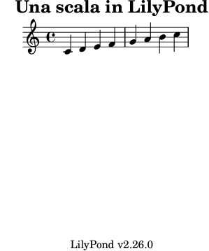

| [Top][Contents][Index] |
LilyPond — Utilizzo
|
Questo manuale spiega come eseguire i programmi distribuiti con LilyPond versione 2.26.0. Inoltre, suggerisce alcune delle “migliori pratiche” per un uso efficiente. |
1 Eseguire lilypond | Utilizzo. | |
2 Aggiornare i file con convert-ly | Aggiornare i file di input. | |
3 Eseguire lilypond-book | Integrare testo e musica. | |
| 4 Programmi esterni | Combinare LilyPond con altri programmi. | |
| 5 Consigli su come scrivere i file | Migliori pratiche ed efficace soluzione degli errori. | |
Appendici | ||
|---|---|---|
| Appendix A GNU Free Documentation License | Licenza di questo documento. | |
| Appendix B Indice | ||
|
Questo manuale è disponibile in altri formati ed è integrato col resto della documentazione. Maggiori informazioni in Manuali. La documentazione completa si trova all’indirizzo https://lilypond.org/. |
| [ << Top ] | [Top][Contents][Index] | [ Aggiornare i file con convert-ly >> ] |
| [ < Top ] | [ Up: Top ] | [ Uso normale > ] |
1 Eseguire lilypond
Questo capitolo descrive dettagliatamente gli aspetti tecnici dell’esecuzione di LilyPond.
| 1.1 Uso normale | ||
| 1.2 Uso da linea di comando | ||
| 1.3 Messaggi di errore | ||
| 1.4 Errori comuni |
[ << Eseguire lilypond ] | [Top][Contents][Index] | [ Aggiornare i file con convert-ly >> ] |
[ < Eseguire lilypond ] | [ Up: Eseguire lilypond ] | [ Uso da linea di comando > ] |
1.1 Uso normale
La maggior parte degli utenti esegue LilyPond attraverso un’interfaccia grafica (GUI); se non lo hai già fatto, leggi il Tutorial. Se usi un editor diverso per scrivere i file LilyPond, leggi la documentazione di quel programma.
[ << Eseguire lilypond ] | [Top][Contents][Index] | [ Aggiornare i file con convert-ly >> ] |
| [ < Uso normale ] | [ Up: Eseguire lilypond ] | [ Utilizzo di lilypond > ] |
1.2 Uso da linea di comando
Questa sezione contiene informazioni aggiuntive sull’uso di LilyPond da linea
di comando. Questo può essere utile per assegnare opzioni aggiuntive al programma.
Inoltre, ci sono alcuni programmi complementari di ‘aiuto’ (come
midi2ly) che funzionano solo da linea di comando.
Con ‘linea di comando’ si intende la linea di comando del sistema operativo. Gli utenti Windows avranno più familiarità con i termini ‘shell DOS’ o ‘shell dei comandi’. Gli utenti MacOS X avranno più familiarità con i termini ‘terminale’ o ‘console’.
Descrivere come usare questa parte di un sistema operativo non rientra negli obiettivi di questo manuale; si prega di consultare altra documentazione su questo argomento se non si conosce la linea di comando.
Utilizzo di lilypond | ||
| Opzioni di base della linea di comando per LilyPond | ||
Opzioni avanzate della linea di comando per lilypond | ||
| Variabili d’ambiente | ||
| Riposizionamento | ||
| LilyPond in una gabbia chroot |
Utilizzo di lilypond
L’eseguibile lilypond può essere lanciato dalla linea di comando
nel seguente modo.
lilypond [opzione]… file…
Se invocato con un nome di file senza estensione, viene tentata per prima
l’estensione .ly. Per leggere l’input da stdin, usare un
trattino (-) al posto di file.
Nota: Nelle versioni di Windows precedenti a Windows 10 1903, LilyPond non sa gestire i nomi file Unicode.
Quando file.ly viene elaborato, lilypond crea file.pdf come output predefinito. Possono essere specificati molti file, ognuno dei quali viene elaborato in modo indipendente.1
Se file.ly contiene più di un blocco \book, tutte le altre
partiture sono salvate in file numerati, a partire da file-1.pdf. Inoltre,
il valore di output-suffix (suffisso di output) viene inserito tra la base
del nome del file e il numero. Per esempio, se file.ly contiene
#(define output-suffix "violino")
\score { … }
#(define output-suffix "violoncello")
\score { … }
LilyPond produce come output file-violino.pdf e file-violoncello-1.pdf.
Usare LilyPond con funzionalità standard della shell
Dato che LilyPond è un’applicazione a linea di comando, si possono sfruttare le funzionalità della ‘shell’ usata per lanciare LilyPond.
Per esempio,
lilypond *.ly
elabora tutti i file LilyPond nella directory corrente.
Potrebbe essere utile anche redirigere l’output della console (per esempio, in un file):
lilypond file.ly 1> stdout.txt lilypond file.ly 2> stderr.txt lilypond file.ly &> all.txt
Questi comandi redirigono rispettivamente l’output ‘normale’, gli ‘errori’ o ‘tutto’ in file di testo. Consulta la documentazione della tua shell, del prompt dei comandi (Windows), delle applicazioni Terminale o Console (MacOS X), per verificare se la redirezione dell’output è supportata o se la sintassi è diversa.
L’esempio seguente cerca e elabora tutti i file di input nella directory corrente e in tutte le directory inferiori ricorsivamente. I file di output vengono salvati nella stessa directory in cui è stato lanciato il comando, invece delle stesse directory in cui si trovano i file di input.
find . -name '*.ly' -exec lilypond '{}' \;
Questo comando dovrebbe funzionare anche in MacOS X.
Gli utenti Windows devono lanciare questo comando:
forfiles /s /M *.ly /c "cmd /c lilypond @file"
nel prompt dei comandi, che di solito si trova in
Avvio > Accessori > Prompt dei comandi, oppure
scrivendo ‘prompt dei comandi’ nella finestra di ricerca.
Altrimenti, si può indicare un percorso esplicito alla cartella che
contiene tutte le sottocartelle con i file di input tramite l’opzione
/p:
forfiles /s /p C:\Documents\MyScores /M *.ly /c "cmd /c lilypond @file"
Tale percorso, se contiene spazi, deve essere racchiuso tra virgolette doppie:
forfiles /s /p "C:\Documents\My Scores" /M *.ly /c "cmd /c lilypond @file"
Opzioni di base della linea di comando per LilyPond
Sono contemplate le seguenti opzioni.
-d,--define-default=variabile[=valore]Si veda Opzioni avanzate della linea di comando per
lilypond.-e,--evaluate=espressioneValuta l’espressione di Scheme prima di analizzare qualsiasi file .ly. Si possono specificare varie opzioni -e; saranno analizzate in modo sequenziale.
L’espressione viene analizzata nel modulo
guile-user, dunque se vuoi usare una definizione come(define-public a 42)in espressione, usalilypond -e '(define-public a 42)'
nella linea di comando, e includi
#(use-modules (guile-user))
in cima al file .ly.
Nota: Gli utenti Windows devono usare i doppi apici invece dei singoli apici.
-E,--epsGenera file EPS.
Questa opzione è simile a
-dseparate-page-formats=ps.-f,--format=formatoFormato del (principale) file di output. I valori possibili di formato sono
ps,pdf,pngosvg.Esempio:
lilypond -fpng file.lyInternamente SVG utilizza un backend specifico e dunque non si può ottenere nella stessa esecuzione usata per altri formati;
-fsvgo--svgsono in realtà equivalenti all’opzione-dbackend=svg. Vedi Opzioni avanzate della linea di comando perlilypond.-h,--helpMostra una sintesi dell’utilizzo.
-H,--header=CAMPOEstrae un campo dell’intestazione nel file NOME.CAMPO.
Per esempio, supponiamo di avere un file di input pippo.ly contenente
\header { title = "pluto" } \score { c1 }Il comando
lilypond -H title pippo.ly
crea un file di testo semplice pippo.title contenente la stringa
pluto.-i,--init=fileImposta il file di inizializzazione su file (predefinito: init.ly).
-I,--include=directoryAggiunge directory al percorso di ricerca per i file di input con percorsi relativi. Per impostazione predefinita, cerca solo nella directory di lavoro corrente.
È possibile assegnare più opzioni -I. La ricerca inizia nella directory di lavoro corrente, e se il file da includere non viene trovato la ricerca continua nella directory indicata dalla prima opzione -I, poi nella directory della seconda opzione -I e così via.
Nota: L’uso del carattere tilde (
~) con l’opzione -I potrebbe causare risultati inaspettati in alcune shell.Gli utenti Windows devono aggiungere una barra obliqua al termine del percorso della directory.
-j,--jail=utente,gruppo,gabbia,directory[Questa opzione è disponibile solo per i sistemi operativi che supportano la funzionalità
chroot. Windows non la supporta.]Esegue
lilypondin una gabbia chroot.L’opzione --jail fornisce un’alternativa più flessibile a --safe quando la formattazione di LilyPond è messa a disposizione attraverso un server web o quando LilyPond esegue sorgenti provenienti dall’esterno (si veda Opzioni avanzate della linea di comando per
lilypond).L’opzione --jail modifica la radice di
lilypondin gabbia appena prima di iniziare il vero processo di compilazione. L’utente e il gruppo vengono poi modificati per corrispondere a quelli forniti, e la directory corrente viene spostata in directory. Questa configurazione garantisce che non sia possibile (almeno in teoria) uscire dalla gabbia. Si noti che perché --jail funzionililyponddeve essere eseguito come root; di solito questo si fa in modo sicuro col comandosudo.Configurare una gabbia è una questione un po’ delicata, perché bisogna essere sicuri che LilyPond possa trovare tutto quello di cui ha bisogno per compilare il sorgente dentro la gabbia. Una configurazione tipica comprende i seguenti elementi:
- Impostare un filesystem distinto
Si dovrebbe creare un filesystem separato LilyPond, così che possa essere montato con opzioni di sicurezza come
noexec,nodev, enosuid. In questo modo è impossibile lanciare degli eseguibili o scrivere su un dispositivo direttamente da LilyPond. Se non si vuole creare una partizione separata, si può creare un file di dimensioni ragionevoli e usarlo per montare un dispositivo di loop. Un filesystem separato garantisce inoltre che LilyPond non possa scrivere su uno spazio maggiore di quanto permesso.- Impostare un altro utente
Per eseguire LilyPond in una gabbia si dovrebbe usare un altro utente e gruppo (ad esempio,
lily/lily) con pochi privilegi. Ci dovrebbe essere una sola directory scrivibile da questo utente, che dovrebbe essere passata in dir.- Preparare la gabbia
LilyPond ha bisogno di leggere alcuni file quando viene lanciato. Tutti questi file devono essere copiati nella gabbia, sotto lo stesso percorso in cui appaiono nel vero filesystem principale. Si deve copiare l’intero contenuto dell’installazione LilyPond (ad esempio, /usr/share/lilypond).
Se c’è un problema, il modo più semplice per individuarlo è lanciare LilyPond usando
strace, che permette di scoprire quali file mancano.- Eseguire LilyPond
In una gabbia montata con
noexecè impossibile eseguire qualsiasi programma esterno. Dunque LilyPond deve essere eseguito con un backend che non richieda tale programma. Come è già stato detto, deve essere eseguito con privilegi di superutente (che ovviamente perde immediatamente), possibilmente con l’uso disudo. È una buona idea limitare il numero di secondi di tempo della CPU che LilyPond può usare (ad esempio conulimit -t), e, se il sistema operativo lo permette, la quantità di memoria che può essere allocata. Si veda anche LilyPond in una gabbia chroot.
-l,--loglevel=livelloImposta la verbosità dell’output della console su livello. I valori possibili sono:
NONENessun output, nemmeno i messaggi di errore.
ERRORSolo i messaggi di errore, niente avvisi o messaggi di elaborazione.
WARNAvvisi e messaggi di errore, nessun messaggio di elaborazione.
BASICMessaggi di elaborazione di base (riuscita), avvisi e errori.
PROGRESSTutti i messaggi di elaborazione, avvisi e errori.
INFOMessaggi di elaborazione, avvisi, errori e ulteriori informazioni di esecuzione. Questo è il valore predefinito.
DEBUGTutti i messaggi possibili, incluso l’output verboso di debug.
-o,--output=file-o,--output=cartellaImposta il file di output predefinito file oppure, se una cartella con quel nome esiste già, dirige l’output in cartella, prendendo il nome del file dal file di input. In entrambi i casi viene aggiunto il suffisso appropriato (ad esempio .pdf per il PDF).
-O,--pspdfopt¶-
Imposta l’ottimizzazione dell’output PS/PDF su chiave. I valori possibili sono:
sizeGenera un documento PS/EPS/PDF molto piccolo. Questo è il valore predefinito.
L’uso di questo valore è equivalente a impostare le opzioni a linea di comando Scheme di LilyPond
-dmusic-font-encodings='#f'e-dgs-never-embed-fonts='#f'.TeXProduce file ottimizzati per l’inclusione in documenti pdfTeX, LuaTeX o XeTeX.
L’uso di questo valore è equivalente a impostare le opzioni a linea di comando Scheme di LilyPond
-dmusic-font-encodings='#t'e-dgs-never-embed-fonts='#f'.TeX-GSSe si desidera includere più di un PDF generato da LilyPond in un documento TeX, usare questa opzione e rielaborare il PDF generato da TeX con Ghostscript.
L’uso di questo valore è equivalente a impostare le opzioni a linea di comando Scheme di LilyPond
-dmusic-font-encodings='#t'e-dgs-never-embed-fonts='#t'.
--psQuesta opzione è equivalente a
-fps.--pngGenera immagini di ogni pagina in formato PNG. Questa opzione è equivalente a
-fpng.La risoluzione dell’immagine può essere impostata in N DPI con
-dresolution=N
--pdfGenera PDF. Questa è l’opzione predefinita ed è equivalente a
-fpdf.-s,--silentNon mostra il progresso, ma solo i messaggi di errore. È equivalente a-lERROR.--svgGenera file SVG per ciascuna pagina. Questa opzione è equivalente a
-fsvg.-v,--versionMostra informazioni sulla versione.
-V,--verboseAumenta la prolissità: mostra i percorsi completi di tutti i file letti, dà informazioni sui tempi, etc. È equivalente a
-lDEBUG.-w,--warrantyMostra la garanzia con cui viene distribuito GNU LilyPond. (Distribuito con NESSUNA GARANZIA!)
Opzioni avanzate della linea di comando per lilypond
L’opzione -d è l’interfaccia a linea di comando alla funzione Scheme
di LilyPond ly:set-option. Ciò significa che tutte le opzioni elencate
qui possono essere impostate anche nei file .ly.
-d,--define-default=nome-opzione[=valore-d,--define-default=no-nome-opzioneImposta l’equivalente simbolo interno di Scheme su nome-opzione. Per esempio, l’opzione da linea di comando
-dbackend=svg
è equivalente a
#(ly:set-option 'backend 'svg)
in un file di input di LilyPond.
Se non viene specificato un valore, viene usato il valore predefinito
#t(che potrebbe produrre risultati strani se il valore atteso non è di tipo booleano). Per disabilitare un’opzione, si può usare il prefissono-prima di nome-opzione. Per esempio:-dpoint-and-click='#f'
è equivalente a
-dno-point-and-click
[Attenzione: il carattere ‘#’ introduce un commento in molte shell, dunque si raccomanda di racchiudere sempre tra virgolette le espressioni che lo contengono.]
La seguente tabella elenca tutti i nomi delle opzioni supportate insieme ai
loro rispettivi valori. All’interno del codice Scheme, i valori delle
opzioni possono essere letti usando la funzione ly:get-option.
anti-alias-factornum Elabora a una risoluzione più alta (usando il fattore num, che deve essere un numero intero positivo ≤8) e ridimensiona il risultato per evitare gli “artefatti” nelle immagini PNG. Predefinito:
1.aux-filesbool Se bool è
#t, crea i file .tex, .texi e .count. Questa opzione viene usata principalmente dalilypond-book. Predefinito:#f.backendsimboloUsa simbolo come backend per l’output di LilyPond. I valori possibili sono:
psQuesta è l’impostazione predefinita. I file PostScript comprendono i tipi di carattere TTF, Type1 e OTF. Non vengono inclusi i “sottoinsiemi” di questi tipi. Se si usa un set di caratteri “orientali”, si possono ottenere file di grosse dimensioni.
Anche per l’output PDF viene usato il backend
ps; i dati PS risultanti sono poi rielaborati dallo script di Ghostscriptps2pdf, che si occupa anche dei sottoinsiemi di font.svgScalable Vector Graphics. Viene creato un singolo file SVG per ogni pagina dell’output. I glifi musicali vengono tradotti in grafica vettoriale, ma i tipi di carattere del testo non sono incorporati nei file SVG. Dunque qualsiasi lettore SVG dovrà avere accesso ai tipi di carattere necessari per rendere in modo adeguato il testo. Si raccomanda di non usare “liste” o “alias” dei tipi di carattere se il lettore SVG non è in grado di gestirli. Se si usano i file Web Open Font Format (WOFF), è richiesta anche l’opzione
svg-woff.
clip-systemsboolSe bool è
#t, estrae frammenti musicali da una partitura. Per far ciò è necessario che sia stata definita la funzioneclip-regionsall’interno del blocco\layout. Maggiori informazioni in Estrarre frammenti musicali. Nessun frammento verrà estratto se questa opzione è usata insieme all’opzione -dno-print-pages. Predefinito:#f.cropbool-
Se bool è
#t, viene creato un secondo file PDF (con estensione .cropped.pdf), insieme a un’immagine (con estensione .cropped.png). Questo file di output comprime tutta la musica e le intestazioni, senza margini, in una sola pagina, possibilmente alta. Se è impostata l’opzione --svg, viene prodotto invece un ulteriore file SVG (con estensione .cropped.svg). Se è impostata l’opzione --eps o --ps, al posto di un file PDF ritagliato viene prodotto invece un EPS ritagliato (con estensione .cropped.eps). Predefinito:#f.Si noti che attualmente questa opzione non è adatta all’output con molti sistemi perché viene tolto lo spazio verticale tra i sistemi.
datadirPrefisso per i file di dati. Questa è un’opzione di sola lettura; la sua impostazione non ha effetto.
debug-evalboolSe bool è
#t, usa l’analizzatore di debug Scheme, che in caso di errori mostra le backtrace con i numeri di linea. Predefinito:#f, o#tquando si usa--verbose.debug-skylinesboolSe bool è
#t, fa il debug dei profili (“skyline”). Predefinito:#f.delete-intermediate-filesboolSe bool è
#t, cancella i file .ps intermedi e inutilizzabili creati durante la compilazione. Predefinito:#t.embed-source-codeboolSe bool è
#t, incorpora i file sorgente LilyPond nel documento PDF generato. Predefinito:#f.eps-box-paddingnumSposta il margine sinistro della cornice EPS dell’output di num millimetri. Predefinito:
f(ovvero nessuna cornice).font-export-dirstringaImposta la directory per esportare i font come file PostScript su stringa. È utile quando si desidera creare prima un PDF senza font incorporati e poi incorporarli con Ghostscript come mostrato sotto.
$ lilypond -dfont-export-dir=fontdir -dgs-never-embed-fonts foo.ly $ gs -q -dBATCH -dNOPAUSE -sDEVICE=pdfwrite \ -sOutputFile=foo.embedded.pdf foo.pdf fontdir/*.font.psNota: Diversamente da
font-ps-resdir, questo metodo non permette di incorporare i font CID con Ghostscript 9.26 e versioni successive.Nota: Come con
font-ps-resdir, questa opzione non agisce sui font TrueType, perché incorporare i font TrueType successivamente produce caratteri confusi. Per evitare che i caratteri siano confusi, usaregs-never-embed-fonts, che a dispetto del nome incorpora i font TrueType.Predefinito:
#f(ovvero non esportare).font-ps-resdirstringaImposta la directory (come stringa) per generare un sottoinsieme della directory delle risorse PostScript da usare successivamente per incorporare i font. È utile quando si desidera creare prima un PDF senza font incorporati e poi incorporarli con Ghostscript come mostrato sotto.
$ lilypond -dfont-ps-resdir=resdir -dgs-never-embed-fonts foo.ly $ gs -q -dBATCH -dNOPAUSE -sDEVICE=pdfwrite \ -I resdir -I resdir/Font \ -sOutputFile=foo.embedded.pdf foo.pdfNota: È meglio che la directory specificata non contenga il nome Resource perché ha un significato speciale quando utilizzata con l’opzione
-Idi Ghostscript.Nota: Diversamente da
font-export-dir, questo metodo permette di incorporare i font CID con Ghostscript 9.26 e versioni successive.Note: Come con
font-export-dir, questa opzione non agisce sui font TrueType, perché incorporare i font TrueType successivamente produce caratteri confusi. Per evitare che i caratteri siano confusi, usaregs-never-embed-fonts, che a dispetto del nome incorpora i font TrueType.Predefinito:
#f(ovvero non generare niente).gs-load-fontsbool Se bool è
#t, carica i font attraverso Ghostscript. Questa opzione fa sì che file di output di LilyPond contengano solo i riferimenti a tutti i font, che devono essere risolti in font reali in un passaggio successivo di elaborazione da parte di Ghostscript. Predefinito:#f.gs-load-lily-fontsbool Se bool è
#t, carica i font LilyPond attraverso Ghostscript. Questa opzione fa sì che file di output di LilyPond contengano solo i riferimenti ai suoi font musicali, che devono essere risolti in font reali in un passaggio successivo di elaborazione da parte di Ghostscript. Tutti gli altri font sono generati normalmente. Predefinito:#f.gs-never-embed-fontsbool Se bool è
#t, fa sì che Ghostscript incorpori solo i font TrueType e nessun altro formato per font. Predefinito:#f.helpbool Se bool è
#t, mostra questo aiuto. Predefinito:#f.include-book-title-previewbool Se bool è
#t, include i titoli dei libri nelle immagini di anteprima. Predefinito:#t.include-eps-fontsbool Se bool è
#t, include i font in file EPS con sistemi separati. Predefinito:#t.include-settingsstringa Include il file stringa per le impostazioni globali, che viene incluso prima che la partitura sia elaborata. Predefinito:
#f(ovvero nessun file per le impostazioni globali).job-countnum Elabora in parallelo, usando num lavori. Predefinito:
#f(ovvero nessuna elaborazione in parallelo).log-filestring Redirige l’output nel file di log stringa.log. Predefinito:
#f(ovvero nessun file di log).max-markup-depthnum Imposta la massima profondità per la struttura del blocco markup sul valore num. Se un blocco markup ha più livelli, assume che non terminerà da solo, stampa un avviso e restituisce al suo posto un markup vuoto. Predefinito:
1024.midi-extensionstring Imposta l’estensione predefinita per il file MIDI su .stringa. Predefinito:
"midi".music-strings-to-pathsbool Se bool è
#t, converte le stringhe di testo in percorsi quando i glifi appartengono a un font musicale. Predefinito:#f.paper-sizestringa-tra-virgolette Imposta la dimensione predefinita del foglio su stringa-tra-virgolette. Nota che la stringa deve essere racchiusa tra virgolette precedute dal segno di escape. Predefinito:
"\"a4\"".pixmap-formatsimbolo Imposta il formato di output di Ghostscript per le immagini raster su simbolo. Predefinito:
png16m.png-widthlarghezzapng-heightaltezzaPer l’output PNG, imposta la larghezza e l’altezza (in pixel) del file immagine creato. Se manca una delle opzioni, l’altra dimensione viene calcolata in base al riquadro di delimitazione EPS, mantenendo le proporzioni.
Oltre a --png, per ottenere una scala corretta dell’immagine senza tagli, si deve usare --eps, -dcrop o -dpreview.
L’opzione -dresolution viene ignorata.
Attenzione, c’è un bug nelle versioni di Ghostscript fino alla 9.52 che riguarda queste due opzioni: produce immagini PNG vuote se l’altezza è più grande della larghezza.
point-and-clickbool Se bool è
#t, aggiunge i collegamenti “punta e clicca” all’output PDF e SVG. Si veda Punta e clicca. Predefinito:#t.previewbool Se bool è
#t, crea immagini di anteprima oltre al normale output.Predefinito:
#f.Questa opzione è supportata da tutti i backend (
pdf,png,ps,epsesvg, eccettoscm. Per un file di input chiamato file e backend formato, genera un file di output dal nome file.preview.formato, contenente i titoli e il primo sistema. Se vengono usati i blocchi\booko\bookpart, i titoli di\book,\bookparto\scoreappariranno nell’output, incluso il primo sistema di ogni blocco\scorese la variabileprint-all-headersdi\paperè impostata su#t.Per impedire il normale output, si usano le opzioni -dprint-pages o -dno-print-pages in base alle proprie esigenze.
print-pagesbool Se bool è
#t, genera le pagine complete. Predefinito:#t.L’opzione -dno-print-pages è utile in combinazione con -dpreview o -dcrop.
protected-scheme-parsingboolSe bool è
#t, continua finché l’analizzatore non coglie degli errori nel codice Scheme interno al file di input. Se impostato su#f, in caso di errore si ferma e mostra la traccia di stack. Predefinito:#t.relative-includesbool Quando elabora un comando
\include, cerca il file incluso in posizione relativa al file corrente se bool è#t. Se impostato su#f, cerca il file relativo al file root. Predefinito:#t.resolutionnum Imposta la risoluzione per generare immagini
PNGsu num dpi. Predefinito:101.safebool Se bool è
#t, non si fida dell’input nel file .ly. Predefinito:#f.Quando la formattazione di LilyPond viene messa a disposizione tramite un server web, si DEVE passare l’opzione
-dsafeo l’opzione --jail. L’opzione-dsafeimpedisce che il codice Scheme presente nell’input possa fare uno scempio,% troppo pericoloso per scriverlo correttamente #(s ystem "rm -rf /") % malvagio ma non distruttivo { c4^$(ly:gulp-file "/etc/passwd") }L’opzione -dsafe serve a valutare le espressioni Scheme presenti nell’input in uno speciale modulo di sicurezza. Questo modulo di sicurezza è derivato dal modulo Guile safe-r5rs, ma aggiunge alcune funzioni del LilyPond API. Queste funzioni sono elencate in scm/safe-lily.scm.
Inoltre, la modalità sicura non permette le direttive
\includee disabilita l’uso del backslash nelle stringhe TeX. In modalità sicura, non è possibile importare le variabili di LilyPond in Scheme.L’opzione -dsafe non rileva il sovrautilizzo di risorse. È ancora possibile far sì che il programma rimanga in sospeso per un tempo indefinito, ad esempio alimentando il backend con strutture di dati cicliche. Dunque se si vuole usare LilyPond su un server web pubblicamente accessibile, si deve limitare il processo nell’uso della CPU e della memoria.
La modalità sicura bloccherà la compilazione di molti utili frammenti di codice LilyPond.
L’opzione --jail è un’alternativa più sicura, ma richiede più lavoro per configurarla. Si veda Opzioni di base della linea di comando per LilyPond.
separate-log-filesbool Per i file di input file1.ly, file2.ly, …, salva i dati di log nei file file1.log, file2.log, …, se bool è
#t. Predefinito:#f.separate-page-formatssimboloElenco separato da virgola di formati (
svg,pdf,pngoeps) da usare per le immagini di pagini separate inlilypond-book.show-available-fontsbool Se bool è
#t, elenca i nomi di font disponibili così come li consegna la libreria fontconfig. In fondo a questo elenco LilyPond mostra le impostazioni di configurazione di fontconfig. Predefinito:#f.strip-output-dirbool Se bool è
#t, non usa le directory dei percorsi dei file di input per costruire i nomi dei file di output. Predefinito:#t.strokeadjustbool Se bool è
#t, forza l’aggiustamento del tratto da parte di PostScript. Questa opzione è utile quando il PDF è generato dall’output PostScript (l’aggiustamento del tratto di solito è abilitato automaticamente per gli strumenti bitmap a bassa risoluzione). Senza questa opzione, i lettori PDF tendono a produrre larghezze dei gambi molto variabili alle risoluzioni tipiche dei monitor. Tuttavia l’opzione non produce effetti visibili sulla qualità di stampa e causa un notevole aumento della dimensione dei file PDF. Predefinito:#f.svg-woffbool Questa opzione è richiesta se si usano i file del formato per font Web Open Font Format (WOFF) col backend
svg. Se bool è#t, viene creato un singolo file SVG per ogni pagina di output. Eccetto i glifi musicali di LilyPond, nessun altro tipo di carattere verrà incorporato nel file. Dunque qualsiasi lettore SVG dovrà avere accesso ai tipi di carattere per rendere in modo adeguato il testo. Si raccomanda di non usare gli “alias” o le “liste” dei tipi di carattere se il lettore SVG non è in grado di gestirli. Predefinito:#f.tall-page-formatssimboloElenco separato da virgola di formati (
svg,pdf,pngoeps) da usare per l’immagine ‘tall page’ (pagina alta) inlilypond-book.use-paper-size-for-pageboolSe bool è
#t(predefinito), ogni pagina è impostata sulla dimensione del foglio, forse tagliando le parti che vanno oltre il foglio. Impostandolo su#fla pagina verrà ridimensionata per racchiudere il contenuto a seconda delle necessità.verboseLivello di verbosità. Questa è un’opzione di sola lettura; la sua impostazione non ha effetto.
warning-as-errorbool Se bool è
#t, trasforma tutti i messaggi di avviso e di “errore di programmazione” in errori. Predefinito:#f.
[ << Eseguire lilypond ] | [Top][Contents][Index] | [ Aggiornare i file con convert-ly >> ] |
[ < Opzioni avanzate della linea di comando per lilypond ] | [ Up: Uso da linea di comando ] | [ Riposizionamento > ] |
Variabili d’ambiente
lilypond riconosce le seguenti variabili d’ambiente:
LILYPOND_DATADIRSpecifica la directory predefinita in cui vengono cercati i messaggi della localizzazione e i file di dati, scavalcando le posizioni definite al momento della compilazione o quelle calcolate dinamicamente all’esecuzione (vedi Riposizionamento). Questa directory deve contenere sottodirectory chiamate ly, ps, tex, etc.
LILYPOND_LOCALEDIRSpecifica la directory dove si trovano file relativi alla localizzazione. Scavalca il valore derivato da
LILYPOND_DATADIR.LILYPOND_RELOCDIRSpecifica la directory dove si trovano i file di “riposizionamento” (relocation). Scavalca il valore derivato dalla posizione del binario
lilypond.LANGLa lingua per i dati LilyPond inviati a
stdoutestderr, per esempio relazioni sullo stato di avanzamento, messaggi di avviso o informazioni di debug. Esempio:LANG=de.LILYPOND_LOGLEVELIl livello di log (loglevel) predefinito. Se LilyPond viene chiamato senza un livello di log esplicito (ovvero senza l’opzione --loglevel della linea di comando), viene usato questo valore.
LILYPOND_GC_YIELDUna variabile, in forma di percentuale, che regola il modo in cui viene gestita la memoria. Con valori più alti il programma usa più memoria, con valori più bassi usa più tempo della CPU. Il valore predefinito è
70.TMPDIRSpecifica la directory temporanea in GNU/Linux e Mac. Quella predefinita è /tmp. È la directory in cui vengono salvati i file intermedi (come i file PostScript) durante la compilazione. Sovrascrivere questa variabile può essere utile, per esempio, se l’utente che esegue lilypond non ha permesso di scrittura alla directory temporanea predefinita. Esempio:
TMPDIR=~/foo.
[ << Eseguire lilypond ] | [Top][Contents][Index] | [ Aggiornare i file con convert-ly >> ] |
| [ < Variabili d’ambiente ] | [ Up: Uso da linea di comando ] | [ File di riposizionamento > ] |
Riposizionamento
La maggior parte dei programmi del mondo Unix usa directory predefinite per i dati determinati al momento della configurazione che precede la compilazione. LilyPond non fa eccezione. Per esempio, un’installazione tipica mette il binario lilypond in /usr/bin e tutti i file specifici di LilyPond in sottodirectory di /usr/share/lilypond/2.26.0/ (assumendo che la versione corrente sia 2.26.0).
Questo approccio, sebbene funzioni bene in caso di compilazione manuale e di piattaforme che dispongono di gestori di pacchetti standardizzati, può causare problemi laddove tali gestori di pacchetti non siano abituali o non siano attivi per impostazione predefinita. Esempi tipici di tali piattaforme sono Windows e MacOS, i cui utenti si aspettano che le applicazioni bundle possano essere installate ovunque.
L’abituale soluzione a questo problema è il supporto per il riposizionamento (in inglese relocation): invece di usare percorsi prestabiliti ai file di dati, le posizioni dei necessari file di supporto vengono calcolate al momento dell’esecuzione (runtime) del programma in modo relativo al binario eseguito.
| File di riposizionamento | ||
| Algoritmo di riposizionamento |
[ << Eseguire lilypond ] | [Top][Contents][Index] | [ Aggiornare i file con convert-ly >> ] |
| [ < Riposizionamento ] | [ Up: Riposizionamento ] | [ Algoritmo di riposizionamento > ] |
File di riposizionamento
Esiste in realtà un secondo meccanismo per la configurazione runtime:
LilyPond fa ampio ricorso a programmi e librerie esterne, in particolare
le librerie ‘FontConfig’ e ‘Guile’ per trovare i font di sistema e
gestire i file Scheme, e al programma gs per convertire i dati
PS in file PDF. Tutti questi devono anche essere configurati per individuare
i propri file di dati. Per far ciò, il programma lilypond analizza
tutti i file presenti in una directory chiamata relocate (se esiste;
vedi sotto dove si cerca questa directory) per manipolare le variabili
d’ambiente, che a loro volta controllano queste librerie e programmi
esterni. Il formato di tali file di riposizionamento è semplice; ogni
riga ha la sintassi
comando chiave=valore
e le righe vuote vengono ignorate.
La direttiva comando è una delle seguenti.
setImposta incondizionatamente la variabile d’ambiente chiave su valore. Sovrascrive un valore impostato precedentemente.
set?Imposta la variabile d’ambiente chiave su valore solo se chiave non è ancora stata definita. In altre parole, non sovrascrive un valore impostato precedentemente.
setdirSe valore è una directory, imposta incondizionaramente la variabile d’ambiente chiave su valore. Altrimenti, emette un avviso.
setfileSe valore è un file, imposta incondizionaramente la variabile d’ambiente chiave su valore. Altrimenti, emette un avviso.
prependdirAntepone il valore della directory all’elenco delle directory della variabile d’ambiente chiave. Se chiave non esiste viene creata.
Le variabili d’ambiente (precedute dal segno del dollaro) sono permesse dentro il valore e vengono espanse prima che la direttiva sia eseguita.
Ecco due esempi di comandi di riposizionamento dei file.
set? FONTCONFIG_FILE=$INSTALLER_PREFIX/etc/fonts/fonts.conf prependdir GUILE_LOAD_PATH=$INSTALLER_PREFIX/share/guile/1.8
Nei file di riposizionamento si dovrebbe evitare di inserire molteplici righe che impostano la stessa variabile d’ambiente, perché l’ordine di analisi dei file nella directory relocate è arbitrario.
[ << Eseguire lilypond ] | [Top][Contents][Index] | [ Aggiornare i file con convert-ly >> ] |
| [ < File di riposizionamento ] | [ Up: Riposizionamento ] | [ LilyPond in una gabbia chroot > ] |
Algoritmo di riposizionamento
LilyPond usa il seguente algoritmo per trovare i suoi file di dati.
- Calcola la directory in cui si trova il binaio
lilypondattualmente eseguito. Chiamiamolabindir. Imposta la variabile d’ambiente (interna)INSTALLER_PREFIXsu bindir/.. (ovvero la directory genitore dibindir). - Controlla la variabile d’ambiente
LILYPOND_DATADIR. Se impostata, usa il suo valore per la directory dei dati di LilyPond,datadir. Altrimenti usa $INSTALLER_PREFIX/share/lilypond/versione (dove versione è la versione corrente di LilyPond) o $INSTALLER_PREFIX/share/lilypond/current. - Controlla la variabile d’ambiente
LILYPOND_LOCALEDIR. Se impostata, usa il suo valore per la directory dei dati di localizzazione di LilyPond,localedir. Altrimenti usa $INSTALLER_PREFIX/share/locale. - Controlla la variabile d’ambiente
LILYPOND_RELOCDIR. Se impostata, usa il suo valore per la directory di riposizionamento dei file di LilyPond,relocdir. Altrimenti usa $INSTALLER_PREFIX/etc/relocate. - Se
datadirnon esiste, usa un valore determinato al momento della compilazione. Idem perlocaledir(ma non perrelocdir, dato che non ha senso averlo). - Se
relocdiresiste, elabora tutti i file in questa directory come descritto in File di riposizionamento.
[ << Eseguire lilypond ] | [Top][Contents][Index] | [ Aggiornare i file con convert-ly >> ] |
| [ < Algoritmo di riposizionamento ] | [ Up: Uso da linea di comando ] | [ Messaggi di errore > ] |
LilyPond in una gabbia chroot
Configurare un server perché esegua LilyPond in una gabbia chroot è un lavoro
complesso. La procedura è spiegata sotto. Gli esempi si riferiscono a
Ubuntu GNU/Linux e potrebbero richiedere l’uso di sudo in alcune situazioni.
- Installa i pacchetti necessari: LilyPond, Ghostscript e ImageMagick.
- Crea un nuovo utente dal nome
lily:adduser lily
Questo comando creerà anche un nuovo gruppo per l’utente
lily, e una cartella home,/home/lily - Nella cartella home dell’utente
lilycrea un file da usare come filesystem separato:dd if=/dev/zero of=/home/lily/loopfile bs=1k count= 200000
In questo esempio è stato creato un file di 200MB da usare come filesystem della gabbia.
- Crea un dispositivo di loop, crea e monta un filesystem, quindi crea
una cartella scrivibile dall’utente
lily:mkdir /mnt/lilyloop losetup /dev/loop0 /home/lily/loopfile mkfs -t ext3 /dev/loop0 200000 mount -t ext3 /dev/loop0 /mnt/lilyloop mkdir /mnt/lilyloop/lilyhome chown lily /mnt/lilyloop/lilyhome
- Nella configurazione dei server, JAIL sarà
/mnt/lilyloope DIR sarà/lilyhome. - Crea un grande albero delle directory nella gabbia copiando i file
necessari, come mostrato nello script di esempio più in basso.
Puoi usare
sedper creare i comandi di copia necessari per un certo eseguibile:for i in "/usr/local/lilypond/usr/bin/lilypond" "/bin/sh" "/usr/bin/; \ do ldd $i | sed 's/.*=> \/\(.*\/\)\([^(]*\).*/mkdir -p \1 \&\& \ cp -L \/\1\2 \1\2/' | sed 's/\t\/\(.*\/\)\(.*\) (.*)$/mkdir -p \ \1 \&\& cp -L \/\1\2 \1\2/' | sed '/.*=>.*/d'; done
Script di esempio per Ubuntu 8.04 a 32-bit
#!/bin/sh
## Impostazioni predefinite
username=lily
home=/home
loopdevice=/dev/loop0
jaildir=/mnt/lilyloop
# Il prefisso (senza la barra iniziale!)
lilyprefix=usr/local
# La directory di sistema in cui è installato lilypond
lilydir=/$lilyprefix/lilypond/
userhome=$home/$username
loopfile=$userhome/loopfile
adduser $username
dd if=/dev/zero of=$loopfile bs=1k count=200000
mkdir $jaildir
losetup $loopdevice $loopfile
mkfs -t ext3 $loopdevice 200000
mount -t ext3 $loopdevice $jaildir
mkdir $jaildir/lilyhome
chown $username $jaildir/lilyhome
cd $jaildir
mkdir -p bin usr/bin usr/share usr/lib usr/share/fonts $lilyprefix tmp
chmod a+w tmp
cp -r -L $lilydir $lilyprefix
cp -L /bin/sh /bin/rm bin
cp -L /usr/bin/convert /usr/bin/gs usr/bin
cp -L /usr/share/fonts/truetype usr/share/fonts
# Ora la magica ricopiatura della libreria
for i in "$lilydir/usr/bin/lilypond" "$lilydir/usr/bin/guile" "/bin/sh" \
"/bin/rm" "/usr/bin/gs" "/usr/bin/convert"; do ldd $i | sed 's/.*=> \
\/\(.*\/\)\([^(]*\).*/mkdir -p \1 \&\& cp -L \/\1\2 \1\2/' | sed \
's/\t\/\(.*\/\)\(.*\) (.*)$/mkdir -p \1 \&\& cp -L \/\1\2 \1\2/' \
| sed '/.*=>.*/d'; done | sh -s
# I file condivisi per Ghostscript...
cp -L -r /usr/share/ghostscript usr/share
# I file condivisi per ImageMagick
cp -L -r /usr/lib/ImageMagick* usr/lib
### Ora, assumendo di avere test.ly in /mnt/lilyloop/lilyhome,
### si dovrebbe poter eseguire:
### Nota che /$lilyprefix/bin/lilypond è uno script, che imposta la variabile
### LD_LIBRARY_PATH - questo è cruciale
/$lilyprefix/bin/lilypond -jlily,lily,/mnt/lilyloop,/lilyhome test.ly
[ << Eseguire lilypond ] | [Top][Contents][Index] | [ Aggiornare i file con convert-ly >> ] |
| [ < LilyPond in una gabbia chroot ] | [ Up: Eseguire lilypond ] | [ Errori comuni > ] |
1.3 Messaggi di errore
Quando si compila un file possono apparire vari messaggi di errore:
- Avvertimento ¶
Qualcosa appare sospetto. Se stai cercando di fare qualcosa di insolito allora comprenderai il messaggio e potrai ignorarlo. Tuttavia di solito i messaggi di avvertimento indicano che il file di input ha qualcosa che non va.
- Errore ¶
C’è qualcosa di assolutamente sbagliato. Il passo attualmente in elaborazione (analisi, interpretazione o formattazione) verrà completato, ma il passo successivo verrà saltato.
- Errore fatale ¶
C’è qualcosa di assolutamente sbagliato e LilyPond non può continuare. Questo accade raramente. La causa più comune è un’errata installazione dei tipi di carattere.
- Errore Scheme ¶
-
Gli errori che capitano mentre si esegue del codice Scheme sono individuati dall’interprete Scheme. Se si esegue con l’opzione di prolissità (
-Vo --verbose), viene stampata una traccia della chiamata di funzione responsabile dell’errore. - Errore di programmazione ¶
Si è verificata una qualche incongruenza interna. Questi messaggi di errore servono ad aiutare programmatori e debugger. Di solito si possono ignorare. Talvolta sono talmente numerosi da nascondere il resto dell’output.
- Sospeso (core dumped) ¶
Segnala un serio errore di programmazione che ha mandato in crash il programma. Questi errori sono considerati critici. Se ti imbatti in un errore simile, invia una segnalazione di errore.
Se gli avvertimenti e gli errori possono essere collegati a una parte specifica del file di input, i messaggi di errore hanno la seguente forma
file:riga:colonna: messaggio riga di input responsabile dell'errore
Nella riga responsabile si inserisce un a capo per indicare la colonna in cui è stato trovato l’errore. Ad esempio,
test.ly:2:19: error: not a duration: 5
{ c'4 e'
5 g' }
Queste posizioni indicano il punto in cui LilyPond ritiene più probabile che siano apparsi l’avvertimento o l’errore, ma (per loro stessa natura) avvertimenti ed errori capitano quando succede qualcosa di imprevisto. Se non riesci a vedere un errore nella riga suggerita, prova a controllare una o due righe sopra la posizione indicata.
Attenzione: l’analisi degli errori è sempre attivata nel corso dei vari passaggi di elaborazione. Per esempio, se ci sono parti di input che sono elaborati varie volte (es: per produrre l’output midi e quello grafico) oppure se viene usata la stessa variabile musicale in vari contesti, potrebbe apparire lo stesso messaggio molteplici volte. Anche la diagnosi eseguita in uno degli ‘ultimi’ passaggi (es: controlli di battuta) può apparire varie volte.
Maggiori informazioni sugli errori si trovano in Errori comuni.
[ << Eseguire lilypond ] | [Top][Contents][Index] | [ Aggiornare i file con convert-ly >> ] |
| [ < Messaggi di errore ] | [ Up: Eseguire lilypond ] | [ La musica esce dalla pagina > ] |
1.4 Errori comuni
Le condizioni di errore descritte di seguito capitano spesso, ma la causa non è ovvia né facile da trovare. Una volta che sono state individuate e comprese, è facile gestirle.
[ << Eseguire lilypond ] | [Top][Contents][Index] | [ Aggiornare i file con convert-ly >> ] |
| [ < Errori comuni ] | [ Up: Errori comuni ] | [ Appare un rigo in più > ] |
La musica esce dalla pagina
Se la musica esce dalla pagina al di là del margine destro o appare eccessivamente compressa, quasi sempre è dovuto all’inserimento di una durata errata di una nota, che fa sì che l’ultima nota di una misura si estenda oltre la barra di divisione. Non è sbagliato se la nota finale di una misura non termina entro la barra di divisione inserita automaticamente, perché semplicemente si assume che la nota continui nella misura successiva. Ma se si presenta una lunga sequenza di misure simili, la musica può apparire compressa o può uscire dalla pagina perché gli a capo automatici possono essere inseriti soltanto alla fine di misure complete, ovvero quando tutte le note finiscono prima o alla fine della misura.
Nota: Una durata sbagliata può inibire l’interruzione di linea, portando a una linea di musica estremamente compressa o a musica che esce dalla pagina.
La durata errata può essere trovata facilmente se si usano i controlli di battuta, si veda Controlli di battuta e del numero di battuta.
Se si vuole davvero ottenere una serie di tali misure sovrapposte bisogna inserire una barra di divisione invisibile nel punto in cui si desidera l’interruzione di linea. Per i dettagli si veda Stanghette.
[ << Eseguire lilypond ] | [Top][Contents][Index] | [ Aggiornare i file con convert-ly >> ] |
| [ < La musica esce dalla pagina ] | [ Up: Errori comuni ] | [ Messaggio di errore Unbound variable % > ] |
Appare un rigo in più
Se i contesti non sono creati esplicitamente con \new o
\context, saranno creati senza avviso appena si incontra
un comando che non può essere applicato a un contesto
esistente. Nelle partiture semplici la creazione automatica dei contesti
è utile: infatti la maggior parte degli esempi nei manuali LilyPond sfrutta
questa semplificazione. Talvolta, però, la creazione silenziosa di contesti
può causare la comparsa di nuovi righi o partiture non desiderate. Ad esempio,
si potrebbe pensare che il seguente codice colori di rosso tutte le teste
delle note nel rigo, ma in realtà produce due righi, di cui il più basso
conserva il colore nero predefinito per le teste delle note.
\override Staff.NoteHead.color = #red \new Staff { a' }![[image of music]](c3/lily-eebc3507.png)
Questo accade perché non esiste un contesto Staff quando viene
elaborata l’istruzione di override, quindi ne viene implicitamente creato uno e
l’override viene applicato ad esso. Ma poi il comando \new Staff crea
un altro rigo separato nel quale vengono inserite le note. Il codice
corretto per colorare le teste di tutte le note è
\new Staff { \override Staff.NoteHead.color = #red a' }![[image of music]](fd/lily-21542a03.png)
[ << Eseguire lilypond ] | [Top][Contents][Index] | [ Aggiornare i file con convert-ly >> ] |
| [ < Appare un rigo in più ] | [ Up: Errori comuni ] | [ Messaggio di errore FT_Get_Glyph_Name > ] |
Messaggio di errore Unbound variable %
Questo messaggio di errore comparirà in fondo alla console di output o nel file di log insieme al messaggio “Guile signalled an error …” ogni volta che viene chiamata una routine di Scheme che contenga (erroneamente) un commento LilyPond invece di un commento Scheme.
I commenti LilyPond iniziano con un segno di percentuale, (%), e non
devono essere usati all’interno delle routine di Scheme. I commenti Scheme
iniziano con un punto e virgola, (;).
Messaggio di errore FT_Get_Glyph_Name
Questo messaggio di errore compare nella console di output o nel file di log file se un file di input contiene un carattere non-ASCII e non è stato salvato nella codifica UTF-8. Per dettagli si veda Codifica del testo.
[ << Eseguire lilypond ] | [Top][Contents][Index] | [ Aggiornare i file con convert-ly >> ] |
| [ < Messaggio di errore FT_Get_Glyph_Name ] | [ Up: Errori comuni ] | [ Messaggio di errore \new inaspettato > ] |
Avvertimento sul fatto che le affinità del rigo devono solo diminuire
Questo avvertimento può apparire se non ci sono dei righi nell’output,
ad esempio se ci sono solo un contesto ChordName e un
contesto Lyrics, come in un lead sheet. Si possono evitare questi
messaggi di avvertimento facendo in modo che uno dei contesti si comporti
come un rigo inserendo
\override VerticalAxisGroup.staff-affinity = ##f
all’inizio del contesto. Per dettagli si veda “Spacing of non-staff lines” in Spaziatura verticale flessibile all’interno dei sistemi.
Messaggio di errore \new inaspettato
Un blocco \score deve contenere una singola espressione musicale.
Se invece contiene vari \new Staff, \new StaffGroup o simili
contesti introdotti con \new senza che questi siano racchiusi tra
parentesi graffe, { … }, o doppie parentesi uncinate, << … >>,
ovvero così:
\score {
% Invalido! Genera l'errore: errore di sintassi, \new inaspettato
\new Staff { … }
\new Staff { … }
}
verrà generato questo messaggio di errore.
Per evitare l’errore, è sufficiente racchiudere tutti i blocchi \new tra
parentesi graffe o doppie parentesi uncinate.
Se si usano le parentesi graffe, i blocchi \new appariranno in
modo sequenziale:
\score { { \new Staff { a' a' a' a' } \new Staff { g' g' g' g' } } }![[image of music]](4f/lily-6ec06842.png)
ma è più probabile che si debbano usare le doppie parentesi uncinate in modo che i nuovi righi siano avviati in parallelo, ovvero contemporaneamente:
\score { << \new Staff { a' a' a' a' } \new Staff { g' g' g' g' } >> }![[image of music]](cd/lily-4b479304.png)
[ << Eseguire lilypond ] | [Top][Contents][Index] | [ Aggiornare i file con convert-ly >> ] |
[ < Messaggio di errore \new inaspettato ] | [ Up: Errori comuni ] | [ Aggiornare i file con convert-ly > ] |
Avviso questa voce ha bisogno di un’impostazione \voiceXx o \shiftXx
Se note appartenenti a due voci diverse con gambi nella stessa direzione si trovano nello stesso momento musicale, e per le voci non è stato specificato alcun spostamento, quando si compila il file apparirà il messaggio di avviso ‘avviso: questa voce ha bisogno di un'impostazione \voiceXx o \shiftXx’. Tale avviso apparirà anche quando le note non hanno gambi visibili, come nel caso delle semibrevi, se i gambi di note più brevi della stessa altezza sono nella stessa direzione.
Ricorda che la direzione del gambo, a meno che non sia specificata, per
esempio tramite \voiceOne, etc., dipende dalla posizione della
nota sul rigo. Dunque se la direzione del gambo non è specificata, l’avviso
apparirà solo quando i gambi si trovano nella stessa direzione, ovvero
quando le note si trovano nella stessa metà del rigo.
Si possono evitare questi avvisi mettendo le note in voci in cui siano
indicate le direzioni dei gambi e gli spostamenti, per esempio usando
\voiceOne, etc.
Le note delle voci con un numero maggiore di due, \voiceThree, etc., sono
spostate automaticamente per avitare la collisione tra colonne di note. Ciò
causa uno spostamento visibile delle note con gambo, mentre le semibrevi
non sono spostate visibilmente, a meno che non si verifichi una reale collisione
tra teste di nota oppure quando le voci si incrociano rispetto al loro ordine
naturale (quando le note di \voiceThree sono più alte di quelle di
\voiceOne, etc.).
Vedi anche
Definire esplicitamente le voci, Esempio musicale, Polifonia su un solo rigo, Risoluzione delle collisioni.
[ << Eseguire lilypond ] | [Top][Contents][Index] | [ Eseguire lilypond-book >> ] |
| [ < Avviso questa voce ha bisogno di un’impostazione \voiceXx o \shiftXx ] | [ Up: Top ] | [ Perché la sintassi cambia? > ] |
2 Aggiornare i file con convert-ly
Via via che LilyPond migliora, la sintassi (il linguaggio di input) di alcuni comandi e funzioni può cambiare. Ciò può causare errori imprevisti, avvisi e perfino output errato se i file di input, creati in precedenza per versioni più vecchie, vengono usati con versioni più recenti.
Per superare questo problema, si può usare il comando convert-ly per
aggiornare questi file di input più vecchi alla nuova sintassi.
[ << Aggiornare i file con convert-ly ] | [Top][Contents][Index] | [ Eseguire lilypond-book >> ] |
[ < Aggiornare i file con convert-ly ] | [ Up: Aggiornare i file con convert-ly ] | [ Utilizzo di convert-ly > ] |
2.1 Perché la sintassi cambia?
Le modifiche della sintassi di solito servono a rendere l’input più facile sia da leggere che da scrivere e talvolta ad aggiungere a LilyPond nuove funzionalità o miglioramenti di funzioni esistenti.
Ecco un esempio reale:
Tutti i nomi delle proprietà di \paper e \layout dovrebbero essere
scritte nella forma primo-secondo-terzo. Tuttavia, nella versione 2.11.60
è emerso che la proprietà printallheaders non seguiva questa convenzione.
Questa proprietà doveva essere lasciata così come era (confondendo i nuovi
utenti con un formato di input incoerente), o doveva essere cambiata
(disturbando i vecchi utenti con file di input già scritti)?
Fu deciso di cambiare il nome della proprietà in print-all-headers, e
tramite il comando convert-ly i vecchi utenti avevano a disposizione
uno strumento per aggiornare automaticamente i propri file di input.
Tuttavia il comando convert-ly non è sempre in grado di gestire tutti
i cambiamenti di sintassi. Nelle versioni di LilyPond precedenti la versione
2.4.2, gli accenti e i caratteri non inglesi venivano inseriti con la notazione
standard di LaTeX. Per esempio, per inserire la parola francese che significa
‘Natale’ si usava No\"el. Ma nelle versioni successive di LilyPond, il
carattere speciale ë deve essere inserito direttamente come carattere
UTF-8. Il comando convert-ly non può sostituire i caratteri speciali
di LaTeX con i rispettivi caratteri UTF-8, dunque è necessario aggiornare a mano
i vecchi file di input di LilyPond.
Le regole di conversione del comando convert-ly si basano sulla ricerca
e sostituzione di parole chiave (piuttosto che su una completa ‘comprensione’
del contesto di ciò che sta cambiando in un certo file di input). Ciò comporta
varie conseguenze:
- L’affidabilità della conversione dipende dalla qualità di ciascun insieme di regole applicate e dalla complessità del rispettivo cambiamento. Talvolta le conversioni richiedono correzioni manuali ulteriori, quindi il file originale deve essere conservato per poterlo confrontare in caso di necessità.
- Sono possibili solo conversioni ai cambi di sintassi più recenti: non ci sono regole per tornare a una versione precedente di LilyPond. Dunque il file di input deve essere aggiornato soltanto quando le versioni precedenti di LilyPond non sono più mantenute. Di nuovo, il file di input originale deve essere conservato per ogni evenienza, magari usando sistemi di controllo di versione (es.: Git) per semplificare la gestione di versioni multiple dei file di input.
- LilyPond ha delle robuste difese quando elabora spazi omessi o posizionati
in modo ‘originale’, ma le regole usate da
convert-lytendono spesso a dare per scontato certe forme stilistiche. Seguire lo stile di input usato nei manuali di LilyPond è dunque la via più sicura per aggiornamenti indolori, soprattutto perché gli esempi dei manuali stessi sono tutti aggiornati col comandoconvert-ly.
2.2 Utilizzo di convert-ly
Il comando convert-ly usa il numero specificato da \version nel
file di input per determinare versioni precedenti. Nella maggior parte dei casi
per aggiornare il file di input è sufficiente eseguire:
convert-ly -e miofile.ly
nella directory che contiene il file di input. Questo comando aggiornerà
miofile.ly e preserverà il file originale rinominandolo
miofile.ly~. Verrà modificato anche il numero di \version
nel file di input aggiornato, insieme agli aggiornamenti di sintassi
richiesti.
Dopo averlo lanciato, il comando convert-ly elencherà i numeri di
versione per i quali sono state eseguite le conversioni. Se non vengono
elencati dei numeri di versione il file è già aggiornato e utilizza la sintassi
LilyPond più recente.
Nota: Per ogni nuova versione di LilyPond, viene creato un nuovo
convert-ly, ma non tutte le versioni di LilyPond necessitano
di cambi di sintassi per i propri file di input creati da una versione
precedente. Ciò significa che il comando convert-ly converterà
i file di input solo fino all’ultimo cambio di sintassi in suo possesso
e di conseguenza il numero di \version nel file di input aggiornato
è talvolta precedente alla versione del comando convert-ly stesso.
Per convertire tutti i file di input in una directory si usa:
convert-ly -e *.ly
Sia gli utenti Linux che MacOS X possono usare le rispettive applicazioni
del terminale, ma gli utenti MacOS X possono anche eseguire questo comando
direttamente dalla voce di menu Compila > Aggiorna la sintassi.
Un utente Windows deve eseguire il comando:
convert-ly.py -e *.ly
inserendolo in un prompt dei comandi, che di solito si trova in
Start > Accessori > Prompt dei comandi o, per gli utenti della
versione 8, scrivendo ‘prompt dei comandi’ nella finestra di ricerca.
Per convertire tutti i file di input che si trovano in diverse sottodirectory:
find . -name '*.ly' -exec convert-ly -e '{}' \;
Questo esempio cerca e converte tutti i file di input nella directory corrente e in tutte le sue sottodirectory ricorsivamente. I file convertiti saranno salvati nella stessa directory insieme all’originale rinominato. Dovrebbe funzionare anche per gli utenti MacOS X, anche se solo tramite l’applicazione del terminale.
Gli utenti Windows devono usare:
forfiles /s /M *.ly /c "cmd /c convert-ly.py -e @file"
Altrimenti, si può indicare un percorso esplicito alla cartella che
contiene tutte le sottocartelle con i file di input tramite l’opzione
/p:
forfiles /s /p C:\Documents\MyScores /M *.ly /c "cmd /c convert-ly.py -e @file"
Tale percorso, se contiene spazi, deve essere racchiuso tra virgolette doppie:
forfiles /s /p "C:\Documents\My Scores" /M *.ly /c "cmd /c convert-ly.py -e @file"
[ << Aggiornare i file con convert-ly ] | [Top][Contents][Index] | [ Eseguire lilypond-book >> ] |
[ < Utilizzo di convert-ly ] | [ Up: Aggiornare i file con convert-ly ] | [ Problemi nell’eseguire convert-ly > ] |
2.3 Opzioni da linea di comando per convert-ly
Il programma viene lanciato in questo modo:
convert-ly [opzione]… nomefile…
Esistono le seguenti opzioni:
-d, --diff-version-updateaumenta il numero di versione in
\versionsolo se il file è stato modificato daconvert-ly. In questo caso, la dichiarazione di versione corrisponderà alla versione successiva all’ultimo reale cambiamento. Il numero di una versione instabile sarà arrotondato al numero della versione stabile successiva, a meno che ciò non vada oltre il numero di versione obiettivo. Senza questa opzione, la versione rifletterà l’ultima conversione tentata.-e, --editApplica le conversioni direttamente nel file di input, modificando l’originale. Il file originale viene rinominato nomefile.ly~. Questo file di backup può essere un file nascosto in alcuni sistemi operativi. Altrimenti, se si desidera specificare un nome diverso per il file aggiornato senza usare il predefinito
~dell’opzione-eappeso al vecchio file di input, si può usare la redirezione dell’output:convert-ly miofile.ly > mionuovofile.ly
Gli utenti Windows devono usare:
convert-ly.py miofile.ly > mionuovofile.ly
-b, --backup-numberedSe usato insieme all’opzione ‘-e’, aggiunge un numero al nome dei file di backup, in modo da non sovrascrivere i backup precedenti. I file di backup possono essere nascosti in alcuni sistemi operativi.
-f, --from=from-patchlevelImposta la versione da cui convertire. Se non viene impostata,
convert-lyla ricaverà dalla stringa\versionpresente nel file. Esempio: --from=2.10.25-h, --helpMostra la schermata di aiuto.
-l loglevel, --loglevel=loglevelImposta la verbosità dell’output su loglevel. I valori possibili, in caratteri maiuscoli, sono
PROGRESS(predefinito),NONE,WARN,ERROReDEBUG.-n, --no-versionNormalmente
convert-lyaggiunge un indicatore\versionnell’output. Questa opzione lo impedisce.-s, --show-rulesMostra tutte le conversioni conosciute ed esce.
-t, --to=to-patchlevelImposta esplicitamente la versione obiettivo della conversione, altrimenti viene usato il valore più recente. Deve essere maggiore della versione iniziale.
convert-ly --to=2.14.1 miofile.ly
Per aggiornare i frammenti LilyPond presenti nei file texinfo, si usa
convert-ly --from=… --to=… --no-version *.itely
Per vedere i cambiamenti della sintassi di LilyPond tra due versioni, si usa
convert-ly --from=… --to=… -s
2.4 Problemi nell’eseguire convert-ly
Quando si esegue convert-ly in una finestra del Prompt dei comandi in Windows su un file il cui nome o percorso contengano degli spazi, è necessario includere tutto il nome del file di input con tre (!) virgolette doppie:
convert-ly """D:/Mie Partiture/Ode.ly""" > "D:/Mie Partiture/new Ode.ly"
Se il semplice comando convert-ly -e *.ly non funziona perché la
linea di comando espansa diventa troppo lunga, si può inserire il comando
convert-ly in un loop. Questo esempio per UNIX
aggiornerà tutti i file .ly nella directory corrente
for f in *.ly; do convert-ly -e $f; done;
Nella finestra del Prompt dei comandi di Windows il comando corrispondente è
for %x in (*.ly) do convert-ly -e """%x"""
Non vengono gestiti tutti i cambiamenti del linguaggio. Si può specificare solo un’opzione di output. È piuttosto improbabile che si aggiornino automaticamente il codice scheme e le interfacce di Scheme di LilyPond; tieniti pronto a correggere a mano il codice Scheme.
2.5 Conversioni manuali
In teoria, un programma come convert-ly potrebbe gestire qualsiasi
cambiamento di sintassi. Dopo tutto, un programma per computer interpreta
la vecchia versione e la nuova versione, quindi un altro programma
può tradurre un file in un altro2.
Tuttavia il progetto LilyPond ha risorse limitate: non tutte le conversioni sono compiute automaticamente. Di seguito è riportato l’elenco dei problemi noti.
1.6->2.0:
Doesn't always convert figured bass correctly, specifically things like {<
>}. Mats' comment on working around this:
To be able to run convert-ly
on it, I first replaced all occurrences of '{<' to some dummy like '{#'
and similarly I replaced '>}' with '&}'. After the conversion, I could
then change back from '{ #' to '{ <' and from '& }' to '> }'.
Doesn't convert all text markup correctly. In the old markup syntax,
it was possible to group a number of markup commands together within
parentheses, e.g.
-#'((bold italic) "string")
This will incorrectly be converted into
-\markup{{\bold italic} "string"}
instead of the correct
-\markup{\bold \italic "string"}
2.0->2.2:
Doesn't handle \partCombine
Doesn't do \addlyrics => \lyricsto, this breaks some scores with multiple
stanzas.
2.0->2.4:
\magnify isn't changed to \fontsize.
- \magnify #m => \fontsize #f, where f = 6ln(m)/ln(2)
remove-tag isn't changed.
- \applyMusic #(remove-tag '. . .) => \keepWithTag #'. . .
first-page-number isn't changed.
- first-page-number no => print-first-page-number = ##f
Line breaks in header strings aren't converted.
- \\\\ as line break in \header strings => \markup \center-align <
"First Line" "Second Line" >
Crescendo and decrescendo terminators aren't converted.
- \rced => \!
- \rc => \!
2.2->2.4:
\turnOff (used in \set Staff.VoltaBracket = \turnOff) is not properly
converted.
2.4.2->2.5.9
\markup{ \center-align <{ ... }> } should be converted to:
\markup{ \center-align {\line { ... }} }
but now, \line is missing.
2.4->2.6
Special LaTeX characters such as $~$ in text are not converted to UTF8.
2.8
\score{} must now begin with a music expression. Anything else
(particularly \header{}) must come after the music.
[ << Aggiornare i file con convert-ly ] | [Top][Contents][Index] | [ Eseguire lilypond-book >> ] |
| [ < Conversioni manuali ] | [ Up: Aggiornare i file con convert-ly ] | [ Eseguire lilypond-book > ] |
2.6 Scrivere codice che funzioni su molteplici versioni
In alcuni casi, in particolare quando si scrive codice destinato a funzionare
come libreria, è opportuno far sì che supporti molteplici versioni di
LilyPond nonostante le modifiche della sintassi. Per farlo si possono
avvolgere porzioni alternative di codice in espressioni condizionali che
dipendono dalla versione di LilyPond attualmente eseguita. La funzione
Scheme ly:version? prevede un operatore di confronto op
e una versione di riferimento ver passata come elenco di interi di
massimo tre elementi. Gli elementi mancanti vengono ignorati, quindi
'(2 20) equivale a qualsiasi versione della serie di versioni
2.20. Sono possibili costrutti come il seguente:
#(cond ((ly:version? > '(2 20)) (ly:message "Questo è il codice da eseguire per LilyPond 2.20 o successivi")) ((ly:version? = '(2 19 57)) (ly:message "Questo verrà eseguito soltanto con LilyPond 2.19.57")) (else (ly:message "Questo verrà eseguito con qualsiasi altra versione")))
Solitamente questa funzione viene integrata nelle funzioni di una libreria, per consentire l’uso di sintassi alternativa, ma è anche possibile usare il confronto direttamente nell’input musicale, come nell’esempio seguente:
{
c' d' e' f'
#(if (ly:version? = '(2 21))
#{ \override NoteHead.color = #red #}
#{ \override NoteHead.color = #blue #})
g' a' b' c''
}
Nota: Questa funzione è stata introdotta in LilyPond 2.21.80, dunque non è possibile fare confronti usando versioni precedenti.
[ << Aggiornare i file con convert-ly ] | [Top][Contents][Index] | [ Programmi esterni >> ] |
| [ < Scrivere codice che funzioni su molteplici versioni ] | [ Up: Top ] | [ Un esempio di documento musicologico > ] |
3 Eseguire lilypond-book
Se si desidera aggiungere a un documento illustrazioni musicali, si può semplicemente fare nello stesso modo in cui si farebbe con altri tipi di immagini: prima si creano le immagini separatamente, in formato PostScript o PNG, poi le si includono in un documento LaTeX o HTML.
lilypond-book offre la possibilità di automatizzare tale procedimento: questo
programma estrae i frammenti musicali dal documento, esegue lilypond
su di essi e crea un nuovo documento contenente le illustrazioni musicali così
ottenute. Le definizioni relative alla larghezza del rigo e alle dimensioni
dei caratteri vengono regolate per adeguarsi alla formattazione del documento.
Si tratta di un programma separato da lilypond e viene lanciato
dalla linea di comando; per maggiori informazioni, si veda
Uso da linea di comando.
Questo procedimento può essere applicato ai documenti LaTeX, HTML, Texinfo o DocBook.
[ << Eseguire lilypond-book ] | [Top][Contents][Index] | [ Programmi esterni >> ] |
[ < Eseguire lilypond-book ] | [ Up: Eseguire lilypond-book ] | [ Integrare musica e testo > ] |
3.1 Un esempio di documento musicologico
Alcuni testi contengono degli esempi musicali: si tratta di trattati musicologici, canzonieri o manuali come questo. È possibile crearli a mano, semplicemente importando un’immagine PostScript nell’elaboratore di testo. Tuttavia esiste una procedura automatizzata che permette di ridurre il carico di lavoro richiesto dai documenti in formato HTML, LaTeX, Texinfo e DocBook.
Uno script chiamato lilypond-book estrarrà i frammenti musicali, li
formatterà e restituirà la notazione risultante. Ecco un piccolo esempio
da usare con LaTeX. L’esempio contiene anche del testo esplicativo,
dunque non è necessario entrare nei dettagli.
Input
\documentclass[a4paper]{article}
\begin{document}
I documenti per \verb+lilypond-book+ possono combinare liberamente musica e testo.
Ad esempio,
\begin{lilypond}
\relative {
c'2 e2 \tuplet 3/2 { f8 a b } a2 e4
}
\end{lilypond}
Le opzioni vengono specificate tra parentesi quadre.
\begin{lilypond}[fragment,quote,staffsize=26,verbatim]
c'4 f16
\end{lilypond}
Se l'esempio è più grande, è possibile metterlo in un file separato e inserirlo
con \verb+\lilypondfile+.
\lilypondfile[quote,noindent]{screech-and-boink.ly}
(Se vuoi provare, sostituisci @file{screech-and-boink.ly} con qualsiasi file @file{.ly}
che si trovi nella stessa directory di questo file.)
\end{document}
Elaborazione
Salva il codice precedente in un file chiamato lilybook.lytex, quindi esegui in un terminale
lilypond-book --output=out --pdf lilybook.lytex
lilypond-book (GNU LilyPond) 2.26.0
Lettura di lilybook.lytex...
…tagliato molto output…
Compilazione di lilybook.tex...
cd out
pdflatex lilybook.tex
…tagliato molto output…
xpdf lilybook.pdf
(sostituisci xpdf col tuo lettore PDF preferito)
L’esecuzione di lilypond-book e pdflatex crea molti file
temporanei e questo potrebbe rendere disordinata la directory di lavoro. Per
ovviare a questo inconveniente, è consigliabile usare l’opzione --output=dir. In questo
modo i file verranno salvati in una sottodirectory dir separata.
Infine ecco il risultato dell’esempio in LaTeX.3 Si conclude qui la parte di tutorial.
Output
I documenti per lilypond-book possono combinare liberamente musica
e testo. Usando la sintassi di Texinfo, questo esempio
@lilypond
\relative {
c'2 e2 \tuplet 3/2 { f8 a b } a2 e4
}
@end lilypond
produce
![[image of music]](10/lily-a2765133.png)
Si possono aggiungere delle opzioni per modificare l’aspetto dei frammenti. Usando la sintassi di LaTeX, questo esempio
\begin{lilypond}[fragment, quote, staffsize=26]
c'4 f16
\end{lilypond}
produce
![[image of music]](cd/lily-645c81c5.png)
Frammenti musicali più grandi possono essere messi in file indipendenti. Usando la sintassi HTML, questo esempio
<lilypondfile quote noindent> snippets/screech-and-boink.ly </lilypondfile>
produce
![[image of music]](19/lily-6611ce84.png)
Perché sia visibile la tagline, predefinita o personalizzata, l’intero
frammento deve essere compreso in un costrutto \book { }.
\book{ \header{ title = "Una scala in LilyPond" } \relative { c' d e f g a b c } }

[ << Eseguire lilypond-book ] | [Top][Contents][Index] | [ Programmi esterni >> ] |
| [ < Un esempio di documento musicologico ] | [ Up: Eseguire lilypond-book ] | [ LaTeX > ] |
3.2 Integrare musica e testo
Questa sezione spiega in dettaglio come integrare LilyPond in vari formati di output.
| 3.2.1 LaTeX | ||
| 3.2.2 Texinfo | ||
| 3.2.3 HTML | ||
| 3.2.4 DocBook |
[ << Eseguire lilypond-book ] | [Top][Contents][Index] | [ Programmi esterni >> ] |
| [ < Integrare musica e testo ] | [ Up: Integrare musica e testo ] | [ Texinfo > ] |
3.2.1 LaTeX
LaTeX costituisce lo standard de facto per le pubblicazioni nell’ambito delle scienze esatte. Si basa sul motore tipografico TeX, che produce la migliore qualità tipografica possibile.
Si veda The Not So Short Introduction to LaTeX per una panoramica sull’uso di LaTeX.
lilypond-book fornisce i seguenti comandi e ambienti per includere
la musica nei file LaTeX:
- il comando
\lilypond{…}, per inserire direttamente un breve codice LilyPond, - l’ambiente
\begin{lilypond}…\end{lilypond}, per inserire direttamente codice LilyPond più lungo, - il comando
\lilypondfile{…}per inserire un file LilyPond, - il comando
\musicxmlfile{…}per inserire un file MusicXML, che viene elaborato damusicxml2lye dalilypond.
Nel file di input, la musica viene specificata con uno dei seguenti comandi:
\begin{lilypond}[le,opzioni,vanno,qui]
CODICE LILYPOND
\end{lilypond}
\lilypondfile[le,opzioni,vanno,qui]{nomefile}
\musicxmlfile[le,opzioni,vanno,qui]{nomefile}
Inoltre, \lilypondversion mostra la versione
di LilyPond impiegata.
L’esecuzione di lilypond-book produce un file che può essere
ulteriormente elaborato con LaTeX.
Vediamo alcuni esempi. L’ambiente lilypond
\begin{lilypond}[quote,fragment,staffsize=26]
c' d' e' f' g'2 g'2
\end{lilypond}
genera
![[image of music]](23/lily-b4fbd4bd.png)
La versione breve
\lilypond[quote,fragment,staffsize=11]{<c' e' g'>}
genera
![[image of music]](9a/lily-8a3cd14c.png)
La larghezza predefinita del rigo musicale è calcolata in base ai
comandi presenti nel preambolo del documento, ovvero la parte del documento
che precede \begin{document}. Il comando lilypond-book
li invia a LaTeX per definire la larghezza del testo. La larghezza del
rigo nei frammenti musicali è quindi regolato in base alla larghezza del
testo. Si noti che questo algoritmo euristico può fallire facilmente; in
questi casi occorre usare l’opzione line-width nel frammento musicale.
Ogni frammento richiama le seguenti macro se sono state definite dall’utente:
-
\preLilyPondExampleviene richiamata prima della musica, -
\postLilyPondExampleviene richiamata dopo la musica, -
\betweenLilyPondSystem[1]viene richiamata tra i sistemi, selilypond-bookdivide il frammento in più pezzi. Deve essere definita in modo da accettare un parametro, che è il numero dei file già inclusi in questo frammento. Per impostazione predefinita inserisce semplicemente\linebreak.
Frammenti di codice selezionati
Talvolta si ha necessità di mostrare degli elementi musicali (ad esempio le legature di portamento e di valore) che proseguono dopo la fine del frammento. È possibile inserirli mandando il rigo a capo e impedendo l’inclusione del restante output di LilyPond.
In LaTeX, si definisce \betweenLilyPondSystem in modo tale che
l’inclusione di altri sistemi venga terminata una volta incluso il
numero di sistemi richiesti. Dato che \betweenLilyPondSystem viene
chiamato la prima volta dopo il primo sistema, includere solo il primo
sistema è semplice.
\def\betweenLilyPondSystem#1{\endinput}
\begin{lilypond}[fragment]
c'1\( e'( c'~ \break c' d) e f\)
\end{lilypond}
Se serve una maggior quantità di sistemi, occorre usare un condizionale
TeX prima di \endinput. In questo esempio, sostituisci il
valore 2 col numero di sistemi che desideri avere nell’output.
\def\betweenLilyPondSystem#1{
\ifnum#1<2\else\expandafter\endinput\fi
}
(Dato che \endinput arresta immediatamente l’elaborazione del file di
input corrente, occorre usare \expandafter per ritardare la chiamata di
\endinput e far sì che avvenga dopo l’esecuzione di \fi, in modo
da bilanciare la condizione \if...-\fi.)
Ricorda che la definizione di \betweenLilyPondSystem è
efficace finché il gruppo corrente è terminato (ad esempio, l’ambiente
LaTeX) o è sovrascritto da un’altra definizione (che vale, in
gran parte dei casi, per il resto del documento). Per reimpostare
la definizione, si scrive
\let\betweenLilyPondSystem\undefined
nel sorgente LaTeX.
Si potrebbe semplificare la procedura creando una macro TeX
\def\onlyFirstNSystems#1{
\def\betweenLilyPondSystem##1{%
\ifnum##1<#1\else\expandafter\endinput\fi}
}
e poi specificando prima di ogni frammento la quantità di sistemi desiderata,
\onlyFirstNSystems{3}
\begin{lilypond}…\end{lilypond}
\onlyFirstNSystems{1}
\begin{lilypond}…\end{lilypond}
Vedi anche
Esistono opzioni specifiche da linea di comando per lilypond-book e
altri dettagli da conoscere quando si elaborano documenti LaTeX; si veda
Utilizzo di lilypond-book.
[ << Eseguire lilypond-book ] | [Top][Contents][Index] | [ Programmi esterni >> ] |
| [ < LaTeX ] | [ Up: Integrare musica e testo ] | [ HTML > ] |
3.2.2 Texinfo
Texinfo è il formato standard per la documentazione del progetto GNU. Un esempio di documento Texinfo è questo stesso manuale. Le versioni del manuale in formato HTML, PDF e Info vengono generate da un documento Texinfo.
lilypond-book fornisce i seguenti comandi e ambienti per includere
musica nei file Texinfo:
- il comando
\lilypond{…}, per inserire direttamente del codice LilyPond breve, - l’ambiente
\begin{lilypond}…\end{lilypond}, per inserire direttamente del codice LilyPond più lungo, - il comando
\lilypondfile{…}per inserire un file LilyPond, - il comando
\musicxmlfile{…}per inserire un file MusicXML, che viene elaborato damusicxml2lye dalilypond.
Nel file di input, la musica viene specificata con uno dei seguenti comandi
@lilypond[le,opzioni,vanno,qui]
IL TUO CODICE LILYPOND
@end lilypond
@lilypond[le,opzioni,vanno,qui]{ IL TUO CODICE LILYPOND }
@lilypondfile[le,opzioni,vanno,qui]{nomefile}
@musicxmlfile[le,opzioni,vanno,qui]{nomefile}
Inoltre, @lilypondversion mostra la versione di
LilyPond impiegata.
Quando si esegue lilypond-book su di esso, il risultato è un
file Texinfo (con estensione .texi) contenente degli elementi @image
per l’HTML, Info e l’output per la stampa. lilypond-book genera le
immagini della musica in formati EPS e PDF per l’utilizzo nell’output per la
stampa e in formato PNG per l’utilizzo nell’output HTML e Info.
Vediamo alcuni esempi. L’ambiente lilypond
@lilypond[quote,fragment] c'4 d' e' f' g'2 g' @end lilypond
genera
![[image of music]](7a/lily-eac2a71d.png)
La versione breve
@lilypond[quote,fragment,staffsize=11]{<c' e' g'>}
genera
Vedi anche
Esistono opzioni da linea di comando specifiche di lilypond-book e
altri dettagli da conoscere quando si elaborano documenti Texinfo, vedi
Utilizzo di lilypond-book.
[ << Eseguire lilypond-book ] | [Top][Contents][Index] | [ Programmi esterni >> ] |
| [ < Texinfo ] | [ Up: Integrare musica e testo ] | [ DocBook > ] |
3.2.3 HTML
lilypond-book fornisce i seguenti comandi e ambienti per includere
musica nei file HTML:
- il comando
\lilypond{…}, per inserire direttamente del codice LilyPond breve, - l’ambiente
\begin{lilypond}…\end{lilypond}, per inserire direttamente del codice LilyPond più lungo, - il comando
\lilypondfile{…}per inserire un file LilyPond, - il comando
\musicxmlfile{…}per inserire un file MusicXML, che viene elaborato damusicxml2lye dalilypond.
Nel file di input, la musica viene specificata con uno dei seguenti comandi:
<lilypond le opzioni vanno qui> CODICE LILYPOND </lilypond> <lilypond le opzioni vanno qui: CODICE LILYPOND /> <lilypondfile le opzioni vanno qui>nomefile</lilypondfile> <musicxmlfile le opzioni vanno qui>nomefile</musicxmlfile>
Inoltre, <lilypondversion/> mostra la versione corrente di LilyPond.
Mostriamo alcuni esempi. L’ambiente lilypond
<lilypond quote fragment staffsize=26> c'4 d' e' f' g'2 g' </lilypond>
genera
La versione breve
<lilypond quote fragment staffsize=11: <c' e' g'> />
genera
Vedi anche
Esistono opzioni da linea di comando specifici di lilypond-book e
altri dettagli da conoscere quando si elaborano documenti HTML, vedi
Utilizzo di lilypond-book.
[ << Eseguire lilypond-book ] | [Top][Contents][Index] | [ Programmi esterni >> ] |
| [ < HTML ] | [ Up: Integrare musica e testo ] | [ Opzioni dei frammenti musicali > ] |
3.2.4 DocBook
Per inserire frammenti di codice LilyPond è una buona idea mantenere la conformità dei documenti DocBook, in modo da poter usare gli editor DocBook, la validazione, etc. Per questo motivo non vengono forniti elementi personalizzati, ma soltanto delle convenzioni di specifica basate sugli elementi DocBook standard.
Convenzioni comuni
Per inserire un frammento di qualsiasi tipo si usano gli elementi mediaobject
e inlinemediaobject, in modo che il frammento possa essere formattato
in linea o meno. Le opzioni di formattazione del frammento vengono sempre
indicate nella proprietà role dell’elemento più interno (si vedano
le prossime sezioni). Gli elementi sono scelti in modo da permettere agli editor
DocBook di ottenere una formattazione ottimale. I file DocBook da
elaborare con lilypond-book devono avere estensione .lyxml.
Includere un file LilyPond
Si tratta del caso più semplice. Bisogna usare l’estensione .ly per
il file da includere e inserirlo come uno standard imageobject, con
la seguente struttura:
<mediaobject>
<imageobject>
<imagedata fileref="music1.ly" role="printfilename" />
</imageobject>
</mediaobject>
Nota che sei libero di usare mediaobject o inlinemediaobject
come elemento più esterno.
Includere codice LilyPond
È possibile includere codice LilyPond all’interno di un elemento
programlisting in cui il linguaggio sia impostato su lilypond,
con la seguente struttura:
<inlinemediaobject>
<textobject>
<programlisting language="lilypond" role="fragment verbatim staffsize=16 ragged-right relative=2">
\context Staff \with {
\remove Time_signature_engraver
\remove Clef_engraver}
{ c4( fis) }
</programlisting>
</textobject>
</inlinemediaobject>
Come si vede, l’elemento più esterno è mediaobject o
inlinemediaobject e c’è un textobject che contiene al
suo interno il programlisting.
Elaborare il documento DocBook
L’esecuzione di lilypond-book su un file .lyxml crea un
documento DocBook valido (con estensione .xml) che potrà essere
ulteriormente elaborato. Usando
dblatex, crea automaticamente
un file PDF da questo documento. Per generare l’HTML (HTML Help,
JavaHelp etc.) si possono usare i fogli di stile DocBook XSL ufficiali;
tuttavia è possibile che sia necessario modificarli un po’.
[ << Eseguire lilypond-book ] | [Top][Contents][Index] | [ Programmi esterni >> ] |
| [ < DocBook ] | [ Up: Eseguire lilypond-book ] | [ Utilizzo di lilypond-book > ] |
3.3 Opzioni dei frammenti musicali
Nelle pagine che seguono, per ‘comando LilyPond’ si intende un qualsiasi
comando descritto nelle sezioni precedenti che sia gestito da lilypond-book
per produrre un frammento musicale. Per semplicità, i comandi LilyPond vengono
mostrati soltanto nella sintassi LaTeX.
Nota che la stringa delle opzioni è analizzata da sinistra a destra; se un’opzione ricorre più di una volta, viene applicata nella sua ultima occorrenza.
Sono disponibili le seguenti opzioni per i comandi LilyPond:
staffsize=altezzaImposta la dimensione del pentagramma a altezza, misurata in punti.
ragged-rightProduce linee con margine destro irregolare e spaziatura naturale, ovvero viene aggiunto
ragged-right = ##tal frammento LilyPond. Frammenti con un solo rigo avranno sempre il margine destro irregolare, a meno che non venga specificato esplicitamentenoragged-right.noragged-rightPer i frammenti di una sola linea, fa sì che la lunghezza del rigo venga estesa fino a coincidere con la larghezza della linea, ovvero viene aggiunto
ragged-right = ##fal frammento LilyPond.line-widthline-width=dimensione\unitàImposta la lunghezza della linea a dimensione (espressa in unità). unità può essere una delle seguenti:
cm,mm,inopt. Questa opzione riguarda l’output LilyPond (ovvero, la lunghezza del rigo del frammento musicale), non la formattazione del testo.Se usato senza un argomento, imposta la lunghezza della linea a un valore predefinito (calcolato da un algoritmo euristico).
Se non viene assegnata un’opzione
line-width,lilypond-bookcerca di indovinare un valore predefinito per gli ambientililypondche non usano l’opzioneragged-right.papersize=stringaImposta la dimensione del foglio su stringa (ad esempio,
a5oletter) per i frammenti musicali che usano\book. Vedi Formati carta predefiniti per un elenco delle dimensioni del foglio disponibili.Questa opzione riguarda l’output LilyPond (ovvero, la dimensione del foglio del frammento musicale), non la formattazione del testo. Valori sconosciuti di stringa vengono ignorati: viene emesso un avviso e il frammento viene elaborato usando la dimensione predefinita
a4.paper-width=dimensione\unitàImposta la larghezza del foglio su dimensione (espressa in unità) per i frammenti musicali che usano
\book. unità è uno dei seguenti:cm,mm,inopt.Questa opzione riguarda l’output LilyPond (ovvero, la larghezza del foglio del frammento musicale), non la formattazione del testo. Se impostata, sovrascrive l’opzione papersize se presente. Se l’opzione paper-height non è specificata, l’altezza del foglio è impostata sull’altezza del foglio A4 predefinito (296mm).
paper-height=dimensione\unitàImposta l’altezza del foglio su dimensione (espressa in unit) per i frammenti musicali che usano
\book. unità è uno dei seguenti:cm,mm,inopt.Questa opzione riguarda l’output LilyPond (ovvero, l’altezza del foglio del frammento musicale), non la formattazione del testo. Se impostata, sovrascrive l’opzione papersize se presente. Se l’opzione paper-width non è specificata, la larghezza del foglio è impostata sulla larghezza del foglio A4 predefinito (210mm).
Example:
\lilypond[paper-width=10\cm, paper-height=57\mm]{ \book { ... } }notimeNon viene visualizzata l’indicazione di tempo e disabilita i segni relativi alla scansione ritmica (segno di tempo, barre di divisione) nella partitura.
fragmentFa sì che
lilypond-bookaggiunga del codice boilerplate in modo che sia possibile inserire semplicemente, ad esempio,c'4
senza
\layout,\score, etc.nofragmentNon aggiunge del codice ulteriore per completare il codice LilyPond nei frammenti musicali. Essendo l’impostazione predefinita,
nofragmentdi norma è ridondante.inlineImposta il frammento per l’uso “in linea”, ovvero all’interno di un paragrafo. Il frammento viene formattato con un padding sinistro molto piccolo (circa lo stesso del padding destro), ignorando il valore dato dall’opzione a linea di comando --left-padding.
Per l’output Texinfo, sopprime l’inserimento di una riga vuota prima e dopo il frammento. Per l’output HTML, sopprime l’inserimento di
<p>prima e di</p>dopo il frammento.Per far sì che un frammento appaia davvero in linea nella modalità LaTeX e Texinfo, è necessario posizionarlo all’interno di un paragrafo, evitando una riga vuota prima e dopo il frammento. Per esempio
Il motivo \lilypond[inline,staffsize=11]{ { \time 2/4 r8 g'[ g' g'] | es'2 } } è ben noto.diventa
Il motivo
![[image of music]](7a/lily-955a27a0.png) è ben noto.
è ben noto.
indent=dimensione\unitàImposta l’indentazione del primo sistema musicale a dimensione (espressa in unità). unità è una delle seguenti:
cm,mm,inopt. Questa opzione riguarda LilyPond, non la formattazione del testo.noindentImposta l’indentazione del primo sistema musicale su zero. Questa opzione interessa LilyPond, non la formattazione del testo. L’assenza di indentazione è l’impostazione predefinita, dunque normalmente
noindentè ridondante.quoteRiduce la lunghezza della linea di un frammento musicale di 2*0.4in e inserisce l’output in un blocco per le citazioni. Il valore ‘0.4in’ può essere controllato con l’opzione
exampleindent.exampleindentImposta la quantità di spazio con cui l’opzione
quoteindenta un frammento musicale.relativerelative=nUsa la modalità di ottava relativa. Per impostazione predefinita, le altezze delle note sono riferite al Do centrale. L’argomento opzionale del numero intero specifica l’ottava della nota iniziale: il valore predefinito
1è il Do centrale. L’opzionerelativefunziona solo quando è impostata l’opzionefragment, quindifragmentè implicitamente sottinteso darelative, a prescindere dalla presenza dell’opzione(no)fragmentnel sorgente.
LilyPond usa lilypond-book anche per produrre la propria
documentazione. A questo scopo, esistono altre opzioni più complesse
per i frammenti musicali.
verbatimL’argomento di un comando LilyPond viene copiato nel file di output e racchiuso in un blocco di testo, seguito da qualsiasi testo assegnato con l’opzione
intertext(non ancora implementato); quindi viene mostrata la musica vera e propria. Questa opzione non funziona bene con\lilypond{}se fa parte di un paragrafo.Se
verbatimviene usato in un comandolilypondfile, è possibile includere il testo di una parte soltanto del file sorgente. Se il file sorgente ha un commento contenente ‘begin verbatim’ (senza virgolette), la citazione del sorgente nel blocco testuale inizierà dopo l’ultima occorrenza di tale commento; in modo analogo, la citazione del testo sorgente si fermerà proprio prima della prima occorrenza di un commento contenente ‘end verbatim’, se presente. Nel seguente file sorgente di esempio, la musica viene interpretata in modalità relativa ma il blocco testuale non mostrerà il bloccorelative, ovvero\relative { % begin verbatim c'4 e2 g4 f2 e % end verbatim }mostrerà il seguente blocco testuale
c4 e2 g4 f2 e
Se si desidera tradurre i commenti e i nomi delle variabili nell’output verbatim ma non nei sorgenti, si può impostare la variabile d’ambiente
LYDOC_LOCALEDIRsul percorso di una directory; la directory deve contenere un albero dei cataloghi di messaggio .mo che hannolilypond-doccome dominio.texidoc(Solo per l’output Texinfo.) Se
lilypondviene lanciato con l’opzione --header=texidoc e il file da elaborare si chiama foo.ly, verrà creato un file foo.texidoc a patto che ci sia un campotexidocnel blocco\header. L’opzionetexidocfa sì chelilypond-bookincluda tali file, aggiungendo il loro contenuto in forma di blocco di documentazione proprio prima del frammento di musica (ma fuori dall’ambienteexamplegenerato da un’opzionequote).Se il file foo.ly contiene
\header { texidoc = "Questo file mostra il funzionamento di una singola nota." } { c'4 }e il documento Texinfo test.texinfo contiene
@lilypondfile[texidoc]{foo.ly}il seguente comando produce il risultato atteso
lilypond-book --pdf --process="lilypond \ --header=texidoc" test.texinfo
Per la maggior parte, i documenti di test di LilyPond (nella directory input della distribuzione) sono piccoli file .ly che hanno esattamente questo aspetto.
Ai fini della localizzazione, se il documento Texinfo document contiene
@documentlanguage LANGe l’header di foo.ly contiene un campotexidocLANG, quando si lancialilypondcon l’opzione --header=texidocLANG verrà incluso foo.texidocLANG invece di foo.texidoc.doctitle(Solo per l’output Texinfo.) Questa opzione funziona in modo simile all’opzione
texidoc: selilypondviene lanciato con l’opzione --header=doctitle e il file da elaborare si chiama foo.ly e contiene un campodoctitlenel blocco\header, viene creato un file foo.doctitle. Se si usa l’opzionedoctitle, i contenuti di foo.doctitle, che dovrebbero trovarsi su una singola linea di text, vengono inseriti nel documento Texinfo come@lydoctitle text.@lydoctitleè una macro definita nel documento Texinfo. Lo stesso discorso relativo all’elaborazionetexidocdelle lingue localizzate si applica anche adoctitle.nogettext(Solo per l’output Texinfo.) Non tradurre i commenti e i nomi delle variabili nel blocco testuale del frammento citato.
printfilenameSe un file di input di LilyPond viene incluso con
\lilypondfile, il nome del file viene mostrato immediatamente prima del frammento musicale. Per l’output HTML, questo nome è un collegamento. Viene mostrata solo la base del nome del file, ovvero viene tolta la parte che costituisce il percorso del file.
[ << Eseguire lilypond-book ] | [Top][Contents][Index] | [ Programmi esterni >> ] |
| [ < Opzioni dei frammenti musicali ] | [ Up: Eseguire lilypond-book ] | [ Estensioni dei nomi di file > ] |
3.4 Utilizzo di lilypond-book
lilypond-book crea un file con una delle seguenti
estensioni: .tex, .texi, .html o .xml,
a seconda del formato dell’output. Tutti i file .tex, .texi e
.xml necessitano di un’ulteriore elaborazione.
Istruzioni specifiche di ogni formato
LaTeX
Esistono due modi di elaborare il documento LaTeX per la stampa o la
pubblicazione: generare direttamente un file PDF tramite PDFLaTeX oppure
generare un file PostScript tramite LaTeX, attraverso un traduttore da DVI a
PostScript come dvips. Il primo modo è più semplice e raccomandato4, e
indipendentemente da quello che userai, puoi convertire facilmente PostScript e
PDF con strumenti come ps2pdf e pdf2ps inclusi nel pacchetto
Ghostscript.
Per creare un file PDF con PDFLaTeX, si usa:
lilypond-book --pdf tuofile.lytex pdflatex tuofile.tex
Per produrre l’output PDF attraverso LaTeX/dvips/ps2pdf:
lilypond-book tuofile.lytex latex tuofile.tex dvips -Ppdf tuofile.dvi ps2pdf tuofile.ps
Il file .dvi creato da questa sequenza non conterrà le teste delle note. È normale; se si seguono le istruzioni, le teste verranno incluse nei file .ps e .pdf.
L’esecuzione di dvips potrebbe generare dei messaggi di avviso
relativi ai caratteri; questi messaggi sono innocui e possono
essere ignorati. Se esegui latex in modalità due colonne, ricorda
di aggiungere -t landscape alle opzioni di dvips.
Gli ambienti come:
\begin{lilypond} … \end{lilypond}
non sono interpretati da LaTeX. lilypond-book estrae questi
‘ambienti’ e li copia in file in un suo formato per poter eseguire
LilyPond su di essi. Prende quindi gli elementi grafici risultanti
e crea un file .tex dove le macro
\begin{lilypond}…\end{lilypond} sono poi
sostituite da comandi di ‘inclusione di immagini’. È a questo
punto che LaTeX viene eseguito (anche se LaTeX è stato eseguito
in precedenza, in realtà ha agito su un documento ‘vuoto’ solo per
fare alcuni calcoli, come per esempio di \linewidth).
Problemi noti e avvertimenti
Il comando \pageBreak non funziona all’interno dell’ambiente
\begin{lilypond} … \end{lilypond}.
Molte variabili del blocco \paper non funzionano all’interno dell’ambiente
\begin{lilypond} … \end{lilypond}. Usa
\newcommand con \betweenLilyPondSystem nel preambolo;
\newcommand{\betweenLilyPondSystem}[1]{\vspace{36mm}\linebreak}
Texinfo
Per generare un documento Texinfo (in qualsiasi formato di output), si seguono
le normali procedure usate con Texinfo; ovvero, si lancia texi2pdf o
texi2dvi o texi2any, a seconda del formato di output
che si vuole creare. Per impostazione predefinita, texi2pdf usa
pdftex per l’elaborazione, come si può verificare nella console di
output. In questo caso, eseguire lilypond-book con l’opzione
--pdf per creare frammenti .pdf invece di file .eps.
Altrimenti pdftex, non essendo capace di includere i file in
formato EPS, emetterà un messaggio di errore.
Si veda la documentazione di Texinfo per ulteriori dettagli.
Opzioni da linea di comando
lilypond-book accetta le seguenti opzioni da linea di comando.
-f formato--format=formatoSpecifica il tipo di documento da elaborare:
html,latex,texi(il formato predefinito),texi-htmlodocbook. Se manca questa opzione,lilypond-bookcerca di rilevare il formato automaticamente, si veda Estensioni dei nomi di file. Attualmente,texi-htmlè equivalente atexi.-F filtro--filter=filtroConvoglia i frammenti attraverso il filtro.
lilypond-booknon esegue contemporaneamente il filtro e l’elaborazione. Ad esempio,lilypond-book --filter='convert-ly --from=2.0.0 -' mio-libro.tely
lilypond-booknon accetta le opzioni --filter e --process in contemporanea.-h--helpMostra un breve messaggio di aiuto.
-I dir--include=dirAggiunge dir al percorso di inclusione. Dato che
lilypond-bookcerca anche dei frammenti già compilati nel percorso di inclusione e non li riscrive nella directory di output, in alcuni casi è necessario eseguire ulteriori comandi cometexi2anyolatexcon le stesse opzioni -I dir.-l loglevel--loglevel=loglevelImposta la verbosità dell’output su loglevel. I valori possibili sono
NONE,ERROR,WARN,PROGRESS(predefinito) eDEBUG. Se questa opzione non viene usata e la variabile d’ambienteLILYPOND_BOOK_LOGLEVELè impostata, il suo valore viene usato come livello di log.-o dir--output=dirSalva i file generati nella directory dir. L’esecuzione di
lilypond-bookgenera tanti piccoli file che LilyPond elaborerà. Per evitare tutto questo disordine nella directory dei sorgenti, si usa l’opzione da linea di comando --output e si entra in questa directory prima di eseguirelatexotexi2any.lilypond-book --output=out tuofile.lytex cd out …
--skip-lily-checkNon si arresta se non viene trovato l’output di LilyPond. Viene usata per generare la documentazione Info di LilyPond, che è priva di immagini.
--skip-png-checkNon si arresta se non vengono trovate immagini PNG per i file EPS. Viene usata per generare la documentazione Info di LilyPond, che è priva di immagini.
--lily-output-dir=dirScrive i file lily-XXX nella directory dir e crea un link nella directory --output. Si usa questa opzione per risparmiare tempo nella compilazione di documenti situati in directory diverse che condividono molti identici frammenti.
--lily-loglevel=loglevelImposta la verbosità dell’output del comando
lilypondsu loglevel. I valori possibili sonoNONE,ERROR,WARN,BASIC,PROGRESS,INFO(predefinito) eDEBUG. Se questa opzione non viene usata e la variabile d’ambienteLILYPOND_LOGLEVELè impostata, il suo valore viene usato come livello di log.--info-images-dir=dirFormatta l’output di Texinfo in modo che Info cerchi le immagini della musica nella directory dir.
--latex-program=progLancia l’eseguibile
proginvece dilatex. Questa opzione è utile, ad esempio, se il documento è elaborato conxelatex.--left-padding=quantitàCrea una spaziatura a sinistra tra i frammenti LilyPond utilizzando gli spazi bianchi.
quantità è arrotondata per eccesso in modo da essere un numero intero multiplo di un big point (bp). Un bp è 1/72 di un pollice (circa 0.353mm). quantità è assegnato in millimetri rispetto all’inizio del rigo. Il valore predefinito è 3.175mm (che equivale a 9bp).
La larghezza di sistemi molto densi può variare in base agli elementi della notazione come i numeri di battuta e i nomi degli strumenti che sono posti a sinistra dell’inizio del rigo. La spaziatura imposta la distanza minima tra il margine sinistro delle immagini dei frammenti e l’inizio dei righi (non indentati); ciò consente l’allineamento verticale desiderato dei frammenti nel documento principale.
Oltre a aggiungere la spaziatura a sinistra, questa opzione accorcia ciascun rigo di quantità. Di conseguenza, ciascuna linea viene spostata visivamente a destra.
-P comando--process=comandoElabora i frammenti di LilyPond con
comando. Il comando predefinito èlilypond.lilypond-booknon accetta le opzioni --filter e --process contemporaneamente.--pdfCrea i file PDF dei frammenti. Se non è impostato, vengono generati solo i file PNG e EPS. Utilizzare questa opzione se si vuole incorporare direttamente i file PDF nei file LaTeX o Texinfo.
--redirect-lilypond-outputPer impostazione predefinita, l’output dei log viene mostrato sul terminale. Questa opzione redirige tutto l’output in dei file di log nella stessa directory dei file sorgente.
--use-source-file-namesSalva i file di output dei frammenti con lo stesso nome, esclusa l’estensione, dei sorgenti. Questa opzione funziona solo con i frammenti inclusi col comando
lilypondfilee solo se le directory indicate da --output-dir e --lily-output-dir sono diverse.-V--verboseMostra un output dettagliato. Questo è equivalente a
--loglevel=DEBUG.-v--versionMostra informazioni sulla versione.
Problemi noti e avvertimenti
Il comando Texinfo @pagesizes non viene interpretato. Allo stesso
modo, i comandi LaTeX che modificano i margini e la larghezza della linea
dopo il preambolo vengono ignorati.
Solo il primo \score di un blocco LilyPond viene elaborato.
[ << Eseguire lilypond-book ] | [Top][Contents][Index] | [ Programmi esterni >> ] |
[ < Utilizzo di lilypond-book ] | [ Up: Eseguire lilypond-book ] | [ Modelli per lilypond-book > ] |
3.5 Estensioni dei nomi di file
Si può usare qualsiasi estensione per il file di input, ma se non si usa
l’estensione raccomandata per uno specifico formato potrebbe essere
necessario specificare a mano il formato di output; per i dettagli si veda
Utilizzo di lilypond-book. Altrimenti, lilypond-book sceglie
automaticamente il formato di output in base all’estensione del file di input.
estensione formato di output .html HTML .htmly HTML .itely Texinfo .latex LaTeX .lytex LaTeX .lyxml DocBook .tely Texinfo .tex LaTeX .texi Texinfo .texinfo Texinfo .xml HTML
Se si usa per il file di input la stessa estensione che lilypond-book
usa per il file di output e se il file di input è nella stessa directory
in cui lavora lilypond-book, bisogna usare l’opzione --output
per far sì che lilypond-book sia eseguito; altrimenti si ferma e
mostra un messaggio di errore simile a “L’output sovrascriverebbe il file di input”.
[ << Eseguire lilypond-book ] | [Top][Contents][Index] | [ Programmi esterni >> ] |
| [ < Estensioni dei nomi di file ] | [ Up: Eseguire lilypond-book ] | [ Condividere l’indice > ] |
3.6 Modelli per lilypond-book
Ecco alcuni modelli da usare con lilypond-book. Se non hai familiarità
con questo programma, consulta Eseguire lilypond-book.
LaTeX
Si possono includere frammenti LilyPond in un documento LaTeX.
\documentclass[]{article}
\begin{document}
Normale testo LaTeX.
\begin{lilypond}
\relative {
a'4 b c d
}
\end{lilypond}
Altro testo LaTeX, seguito da alcune opzioni tra parentesi quadre.
\begin{lilypond}[fragment,relative=2,quote,staffsize=26,verbatim]
d4 c b a
\end{lilypond}
\end{document}
Texinfo
Si possono includere frammenti LilyPond in Texinfo; infatti questo intero manuale è scritto in Texinfo.
\input texinfo
@ifnottex
@node Top
@top
@end ifnottex
Testo Texinfo
@lilypond
\relative {
a4 b c d
}
@end lilypond
Altro testo Texinfo, seguito dalle opzioni tra parentesi.
@lilypond[verbatim,fragment,ragged-right]
d4 c b a
@end lilypond
@bye
html
<!DOCTYPE HTML PUBLIC "-//W3C//DTD HTML 4.01 Transitional//EN">
<HTML>
<body>
<p>
I documenti per lilypond-book possono combinare liberamente musica e testo. Ad
esempio,
<lilypond>
\relative {
a'4 b c d
}
</lilypond>
</p>
<p>
Ancora un po' di LilyPond, questa volta con delle opzioni:
<lilypond fragment quote staffsize=26 verbatim>
a4 b c d
</lilypond>
</p>
</body>
</html>
xelatex
\documentclass{article}
\usepackage{ifxetex}
\ifxetex
%elementi specifici di xetex
\usepackage{xunicode,fontspec,xltxtra}
\setmainfont[Numbers=OldStyle]{Times New Roman}
\setsansfont{Arial}
\else
%Questo può essere lasciato vuoto se non si usa pdftex
\usepackage[T1]{fontenc}
\usepackage[utf8]{inputenc}
\usepackage{mathptmx}%Times
\usepackage{helvet}%Helvetica
\fi
%Qui è possibile inserire tutti i pacchetti inclusi anche in pdftex
\usepackage[ngerman,finnish,english]{babel}
\usepackage{graphicx}
\begin{document}
\title{Un breve documento con LilyPond e xelatex}
\maketitle
I comandi abituali di \textbf{font} interni al \emph{testo} funzionano,
perché \textsf{sono supportati da \LaTeX{} e XeteX.}
Se vuoi usare comandi specifici come \verb+\XeTeX+, devi
includerli nuovamente in un ambiente \verb+\ifxetex+.
You can use this to print the \ifxetex \XeTeX{} command \else
XeTeX command \fi which is not known to normal \LaTeX .
Nel testo normale si possono usare semplicemente i comandi LilyPond, come in
questo esempio:
\begin{lilypond}
{a2 b c'8 c' c' c'}
\end{lilypond}
\noindent
e così via.
I tipi di carattere dei frammenti inseriti con LilyPond devono essere impostati
all'interno dei frammenti stessi. Si legga il manuale di Uso dell'applicazione per
sapere come usare lilypond-book.
\selectlanguage{ngerman}
Auch Umlaute funktionieren ohne die \LaTeX -Befehle, wie auch alle
anderen
seltsamen Zeichen: __ ______, wenn sie von der Schriftart
unterst__tzt werden.
\end{document}
[ << Eseguire lilypond-book ] | [Top][Contents][Index] | [ Programmi esterni >> ] |
| [ < Modelli per lilypond-book ] | [ Up: Eseguire lilypond-book ] | [ Metodi alternativi per combinare testo e musica > ] |
3.7 Condividere l’indice
Queste funzioni sono già incluse nel pacchetto OrchestralLily:
Alcuni utenti preferiscono esportare l’indice da lilypond e leggerlo da dentro LaTeX per la sua maggiore flessibilità nella gestione del testo.
Esportare l’indice da LilyPond
Per questo esempio si presume che lo spartito abbia vari movimenti nello stesso file di output di lilypond.
#(define (oly:create-toc-file layout pages)
(let* ((label-table (ly:output-def-lookup layout 'label-page-table)))
(if (not (null? label-table))
(let* ((format-line (lambda (toc-item)
(let* ((label (car toc-item))
(text (caddr toc-item))
(label-page (and (list? label-table)
(assoc label label-table)))
(page (and label-page (cdr label-page))))
(format #f "~a, section, 1, {~a}, ~a" page text label))))
(formatted-toc-items (map format-line (toc-items)))
(whole-string (string-join formatted-toc-items ",\n"))
(output-name (ly:parser-output-name))
(outfilename (format #f "~a.toc" output-name))
(outfile (open-output-file outfilename)))
(if (output-port? outfile)
(display whole-string outfile)
(ly:warning (G_ "Unable to open output file ~a for the TOC information") outfilename))
(close-output-port outfile)))))
\paper {
#(define (page-post-process layout pages) (oly:create-toc-file layout pages))
}
Importare l’indice in LaTeX
In LaTeX l’intestazione deve includere:
\usepackage{pdfpages}
\includescore{nameofthescore}
dove \includescore viene definito in questo modo:
%%%%%%%%%%%%%%%%%%%%%%%%%%%%%%%%%%%%%%%%%%%%%%%%%%%%%%%%%%%%%%%%%%%%%%%%%%
% \includescore{PossibleExtension}
%%%%%%%%%%%%%%%%%%%%%%%%%%%%%%%%%%%%%%%%%%%%%%%%%%%%%%%%%%%%%%%%%%%%%%%%%%
% Read in the TOC entries for a PDF file from the corresponding .toc file.
% This requires some heave latex tweaking, since reading in things from a file
% and inserting it into the arguments of a macro is not (easily) possible
% Solution by Patrick Fimml on #latex on April 18, 2009:
% \readfile{filename}{\variable}
% reads in the contents of the file into \variable (undefined if file
% doesn't exist)
\newread\readfile@f
\def\readfile@line#1{%
{\catcode`\^^M=10\global\read\readfile@f to \readfile@tmp}%
\edef\do{\noexpand\g@addto@macro{\noexpand#1}{\readfile@tmp}}\do%
\ifeof\readfile@f\else%
\readfile@line{#1}%
\fi%
}
\def\readfile#1#2{%
\openin\readfile@f=#1 %
\ifeof\readfile@f%
\typeout{No TOC file #1 available!}%
\else%
\gdef#2{}%
\readfile@line{#2}%
\fi
\closein\readfile@f%
}%
\newcommand{\includescore}[1]{
\def\oly@fname{\oly@basename\@ifmtarg{#1}{}{_#1}}
\let\oly@addtotoc\undefined
\readfile{\oly@xxxxxxxxx}{\oly@addtotoc}
\ifx\oly@addtotoc\undefined
\includepdf[pages=-]{\oly@fname}
\else
\edef\includeit{\noexpand\includepdf[pages=-,addtotoc={\oly@addtotoc}]
{\oly@fname}}\includeit
\fi
}
[ << Eseguire lilypond-book ] | [Top][Contents][Index] | [ Programmi esterni >> ] |
| [ < Condividere l’indice ] | [ Up: Eseguire lilypond-book ] | [ Programmi esterni > ] |
3.8 Metodi alternativi per combinare testo e musica
Altri modi per combinare testo e musica (senza usare
lilypond-book) sono trattati in
Inclusione di partiture LilyPond in altri programmi.
[ << Eseguire lilypond-book ] | [Top][Contents][Index] | [ Consigli su come scrivere i file >> ] |
| [ < Metodi alternativi per combinare testo e musica ] | [ Up: Top ] | [ Punta e clicca > ] |
4 Programmi esterni
LilyPond può interagire con altri programmi in vari modi.
| 4.1 Punta e clicca | ||
| 4.2 LilyPond e gli editor di testo | ||
| 4.3 Conversione da altri formati | ||
| 4.4 Inclusione di partiture LilyPond in altri programmi | ||
4.5 include indipendenti |
| [ << Programmi esterni ] | [Top][Contents][Index] | [ Consigli su come scrivere i file >> ] |
| [ < Programmi esterni ] | [ Up: Programmi esterni ] | [ Configurare il sistema > ] |
4.1 Punta e clicca
Il "punta e clicca" aggiunge dei collegamenti ai documenti pdf per certi elementi musicali.
| 4.1.1 Configurare il sistema | ||
| Abilitare il punta e clicca | ||
| Punta e clicca selettivo |
| [ << Programmi esterni ] | [Top][Contents][Index] | [ Consigli su come scrivere i file >> ] |
| [ < Punta e clicca ] | [ Up: Punta e clicca ] | [ Usare Xpdf > ] |
4.1.1 Configurare il sistema
Quando questa funzionalità è attiva, LilyPond aggiunge dei collegamenti ipertestuali al file PDF e SVG. Questi collegamenti vengono inviati a un ‘programma di supporto per URI’ o al browser web, che apre un editor di testo col cursore posizionato nel punto giusto.
Perché questo procedimento funzioni è necessario configurare il lettore PDF in modo che segua i collegamenti ipertestuali usando lo script lilypond-invoke-editor fornito insieme a LilyPond.
lilypond-invoke-editor è un piccolo programma di supporto. Lancia un
editor per gli URI textedit e un browser web per altri URI. Controlla
le variabili d’ambiente EDITOR e LYEDITOR per scoprire e
lanciare l’editor preferito da usare. La variabile LYEDITOR ha priorità
sulla variabile EDITOR ed è quindi consigliato l’uso della prima se si
desidera usare un editor per il terminale e un editor diverso per il punta e
clicca di LilyPond.
Ogni editor ha una diversa sintassi per aprire un file a una specifica riga e colonna. Per comodità dell’utente, LilyPond ha comandi pronti per vari editor, elencati in scm/editor.scm. Ciò significa che basta scrivere il nome del file eseguibile dell’editor, per esempio:
export LYEDITOR=atom
e verrà lanciato
atom %(file)s:%(line)s:%(column)s
dove %(file)s, %(line)s e %(column)s vengono sostituiti
rispettivamente dal file, dalla riga e dalla colonna.
Per poter usare un editor non elencato in scm/editor.scm, occorre
scoprire la sua specifica sintassi e assegnare il comando completo alla
variabile LYEDITOR. Ecco un esempio per l’editor Visual Studio Code:
export LYEDITOR="code --goto %(file)s:%(line)s:%(column)s"
Nota: Se si sceglie Emacs, è necessaria un’ulteriore configurazione. Bisogna
aggiungere la riga (server-start) al proprio file ~/.emacs,
altrimenti ogni clic su un oggetto del PDF aprirà una nuova finestra di Emacs.
| Usare Xpdf | ||
| Usare GNOME 2 | ||
| Usare GNOME 3 | ||
| Ulteriore configurazione per Evince |
| [ << Programmi esterni ] | [Top][Contents][Index] | [ Consigli su come scrivere i file >> ] |
| [ < Configurare il sistema ] | [ Up: Configurare il sistema ] | [ Usare GNOME 2 > ] |
Usare Xpdf
Se si usa Xpdf su UNIX, si deve inserire la seguente riga nel file xpdfrc. Su UNIX, questo file può essere /etc/xpdfrc oppure $HOME/.xpdfrc.
urlCommand "lilypond-invoke-editor %s"
Se si usa Ubuntu, è probabile che la versione di Xpdf installata nel sistema causi il crash per qualsiasi file PDF: questa situazione continua da molti anni ed è dovuta a una corrispondenza sbagliata tra librerie. Conviene installare un pacchetto aggiornato di ‘xpdf’ e il corrispondente pacchetto ‘libpoppler’ da Debian. Dopo aver verificato che funziona, si può usare il comando
sudo apt-mark hold xpdf
per impedire a Ubuntu di sovrascriverlo al prossimo ‘aggiornamento’ del suo pacchetto difettoso.
| [ << Programmi esterni ] | [Top][Contents][Index] | [ Consigli su come scrivere i file >> ] |
| [ < Usare Xpdf ] | [ Up: Configurare il sistema ] | [ Usare GNOME 3 > ] |
Usare GNOME 2
Per usare GNOME 2 (e i visualizzatori PDF ad esso integrati), il magico comando che fornisce al sistema gli URI ‘textedit:’ è:
gconftool-2 -t string -s /desktop/gnome/url-handlers/textedit/command "lilypond-invoke-editor %s" gconftool-2 -s /desktop/gnome/url-handlers/textedit/needs_terminal false -t bool gconftool-2 -t bool -s /desktop/gnome/url-handlers/textedit/enabled true
Dopo questi comandi:
gnome-open textedit:///etc/issue:1:0:0
dovrebbe lanciare lilypond-invoke-editor per l’apertura del file.
| [ << Programmi esterni ] | [Top][Contents][Index] | [ Consigli su come scrivere i file >> ] |
| [ < Usare GNOME 2 ] | [ Up: Configurare il sistema ] | [ Ulteriore configurazione per Evince > ] |
Usare GNOME 3
In GNOME 3, gli URI sono gestiti da ‘gvfs’ invece che da ‘gconf’. Si crea un file in una directory locale (ad esempio /tmp) che abbia il nome lilypond-invoke-editor.desktop e il seguente contenuto:
[Desktop Entry] Version=1.0 Name=lilypond-invoke-editor GenericName=Textedit URI handler Comment=URI handler for textedit: Exec=lilypond-invoke-editor %u Terminal=false Type=Application MimeType=x-scheme-handler/textedit; Categories=Editor NoDisplay=true
e poi si eseguono i comandi
xdg-desktop-menu install ./lilypond-invoke-editor.desktop xdg-mime default lilypond-invoke-editor.desktop x-scheme-handler/textedit
Dopo questi comandi:
gnome-open textedit:///etc/issue:1:0:0
dovrebbe lanciare lilypond-invoke-editor per l’apertura del file.
| [ << Programmi esterni ] | [Top][Contents][Index] | [ Consigli su come scrivere i file >> ] |
| [ < Usare GNOME 3 ] | [ Up: Configurare il sistema ] | [ Abilitare il punta e clicca > ] |
Ulteriore configurazione per Evince
Se gnome-open funziona, ma Evince si rifiuta ancora di
aprire i collegamenti punta e clicca a causa di permessi negati,
potrebbe essere necessario cambiare il profilo Apparmor di
Evince che controlla il tipo di azioni che Evince ha il
permesso di eseguire.
In Ubuntu, si modifica il file /etc/apparmor.d/local/usr.bin.evince e si aggiungono le seguenti righe:
# Per i collegamenti Textedit /usr/local/bin/lilypond-invoke-editor Cx -> sanitized_helper,
Dopo aver aggiunto queste righe, si lancia il comando
sudo apparmor_parser -r -T -W /etc/apparmor.d/usr.bin.evince
Ora Evince dovrebbe essere in grado di aprire i collegamenti punta e clicca. È probabile che configurazioni simili funzionino anche con altri visualizzatori.
| [ << Programmi esterni ] | [Top][Contents][Index] | [ Consigli su come scrivere i file >> ] |
| [ < Ulteriore configurazione per Evince ] | [ Up: Punta e clicca ] | [ Punta e clicca selettivo > ] |
Abilitare il punta e clicca
La funzionalità "punta e clicca" è abilitata di default quando si creano i file PDF o SVG.
I collegamenti "punta e clicca" appesantiscono sensibilmente i file di output. Per ridurre la dimensione di questi file (e dei file PS), è possibile disattivare il "punta e clicca" inserendo
\pointAndClickOff
in un file .ly. Il "punta e clicca" può essere abilitato esplicitamente con
\pointAndClickOn
Si può disabilitare il "punta e clicca" anche con un’opzione da linea di comando:
lilypond -dno-point-and-click file.ly
Nota: Occorre sempre disattivare il "punta e clicca" nei file LilyPond che si vogliano diffondere, per evitare di includere nel file PDF delle informazioni sui percorsi del proprio computer: questo infatti può costituire un rischio di sicurezza.
| [ << Programmi esterni ] | [Top][Contents][Index] | [ Consigli su come scrivere i file >> ] |
| [ < Abilitare il punta e clicca ] | [ Up: Punta e clicca ] | [ LilyPond e gli editor di testo > ] |
Punta e clicca selettivo
Per alcune applicazioni interattive, si potrebbe voler includere soltanto alcuni elementi punta e clicca. Ad esempio, se qualcuno volesse creare un’applicazione che riproduca audio o video a partire da una nota in particolare, sarebbe inopportuno che il clic sulla nota portasse alla posizione di un’alterazione o di una legatura che si trovi sopra quella nota.
Questo può essere controllato indicando quali eventi includere:
- Codice interno al file .ly:
\pointAndClickTypes #'note-event \relative { c'2\f( f) }oppure
#(ly:set-option 'point-and-click 'note-event) \relative { c'2\f( f) } - Linea di comando:
lilypond -dpoint-and-click=note-event example.ly
Si può includere più di un evento:
- Codice interno al file .ly:
\pointAndClickTypes #'(note-event dynamic-event) \relative { c'2\f( f) }oppure
#(ly:set-option 'point-and-click '(note-event dynamic-event)) \relative { c'2\f( f) } - Linea di comando:
lilypond \ -e"(ly:set-option 'point-and-click '(note-event dynamic-event))" \ example.ly
| [ << Programmi esterni ] | [Top][Contents][Index] | [ Consigli su come scrivere i file >> ] |
| [ < Punta e clicca selettivo ] | [ Up: Programmi esterni ] | [ Modalità di Emacs > ] |
4.2 LilyPond e gli editor di testo
Vari editor di testo hanno funzionalità specifiche per LilyPond.
| Modalità di Emacs | ||
| Modalità di Vim | ||
| Altri editor |
| [ << Programmi esterni ] | [Top][Contents][Index] | [ Consigli su come scrivere i file >> ] |
| [ < LilyPond e gli editor di testo ] | [ Up: LilyPond e gli editor di testo ] | [ Modalità di Vim > ] |
Modalità di Emacs
Emacs ha una modalità lilypond-mode, che fornisce il completamento delle parole, l’indentazione, le parentesi automatiche e la colorazione della sintassi specifiche di LilyPond, comode scorciatoie per la compilazione e la possibilità di leggere i manuali di LilyPond usando Info. Se lilypond-mode non è installato nel tuo computer, vedi sotto.
Una modalità Emacs per inserire la musica e eseguire LilyPond è presente
nell’archivio dei sorgenti nella directory elisp. Lancia make
install per installarla in elispdir. Il file lilypond-init.el
deve essere messo in load-path/site-start.d/ o aggiunto a
~/.emacs oppure ~/.emacs.el.
Come utente normale, puoi aggiungere il percorso dei sorgenti (ad esempio ~/site-lisp/) al tuo load-path aggiungendo la seguente riga (modificata di conseguenza) al file ~/.emacs
(setq load-path (append (list (expand-file-name "~/site-lisp")) load-path))
| [ << Programmi esterni ] | [Top][Contents][Index] | [ Consigli su come scrivere i file >> ] |
| [ < Modalità di Emacs ] | [ Up: LilyPond e gli editor di testo ] | [ Altri editor > ] |
Modalità di Vim
Per Vim, sono disponibili le seguenti funzionalità per LilyPond: un plugin di riconoscimento del tipo di file, una modalità di indentazione e di evidenziazione della sintassi. Per abilitarle, crea (o modifica) il file $HOME/.vimrc in modo che contenga queste tre righe, in questo ordine:
filetype off set runtimepath+=/usr/local/share/lilypond/current/vim/ filetype on syntax on
Se LilyPond non è installato nella directory /usr/local/, modifica il percorso in modo adeguato. Questo argomento è trattato in Altre fonti di informazione.
| [ << Programmi esterni ] | [Top][Contents][Index] | [ Consigli su come scrivere i file >> ] |
| [ < Modalità di Vim ] | [ Up: LilyPond e gli editor di testo ] | [ Conversione da altri formati > ] |
Altri editor
Altri editor (sia testuali che grafici) supportano LilyPond, ma i loro specifici file di configurazione non sono distribuiti insieme a LilyPond. Consulta la documentazione di questi programmi per maggiori informazioni. Questi editor sono elencati in Editing facilitato.
| [ << Programmi esterni ] | [Top][Contents][Index] | [ Consigli su come scrivere i file >> ] |
| [ < Altri editor ] | [ Up: Programmi esterni ] | [ Utilizzo di midi2ly > ] |
4.3 Conversione da altri formati
È possibile inserire la musica anche importandola da altri formati. Questo capitolo documenta gli strumenti inclusi nella distribuzione che svolgono questo compito. Esistono altri strumenti che producono l’input di LilyPond, ad esempio i sequencer ad interfaccia grafica e i convertitori XML. Per maggiori dettagli consulta il sito web.
Si tratta di programmi separati da lilypond e sono eseguiti
dalla linea di comando; si veda Uso da linea di comando per maggiori
informazioni.
Problemi noti e avvertimenti
Purtroppo non abbiamo le risorse per mantenere questi programmi; prendeteli “così come sono”! Accettiamo con piacere le patch, ma ci sono poche possibilità che i bug vengano risolti.
4.3.1 Utilizzo di midi2ly | Importare MIDI. | |
4.3.2 Utilizzo di musicxml2ly | Importare MusicXML. | |
4.3.3 Utilizzo di abc2ly | Importare ABC. | |
4.3.4 Utilizzo di etf2ly | Importare Finale. | |
| 4.3.5 Altri formati |
| [ << Programmi esterni ] | [Top][Contents][Index] | [ Consigli su come scrivere i file >> ] |
| [ < Conversione da altri formati ] | [ Up: Conversione da altri formati ] | [ Utilizzo di musicxml2ly > ] |
4.3.1 Utilizzo di midi2ly
midi2ly trasforma un file MIDI Type 1 in un file sorgente
di LilyPond.
Il protocollo MIDI (Music Instrument Digital Interface) è uno standard per gli strumenti digitali: fornisce le specifiche per la connessione via cavo, un protocollo seriale e un formato di file. Il formato MIDI è uno standard de facto per esportare la musica da altri programmi, dunque questa capacità diventa utile quando si importano file creati con un programma che converta direttamente in questo formato.
midi2ly converte le tracce presenti nei contesti Staff e
i canali dei contesti Voice. Per indicare le altezze viene usata
la modalità relativa, mentre le durate sono precisate solo quando necessario.
È possibile registrare un file MIDI usando una tastiera digitale e poi
convertirlo in file .ly. Tuttavia, la conversione da MIDI a LY non
è banale: l’esecuzione umana non sarà mai sufficientemente precisa dal punto di vista
ritmico. Se lanciata con la quantizzazione (opzioni -s e -d)
midi2ly cerca di compensare questi errori di tempo, ma non è
molto efficace. Dunque non si raccomanda l’uso di midi2ly
per i file midi generati a partire da un’esecuzione umana.
Si lancia dalla linea di comando in questo modo:
midi2ly [opzione]… file-midi
Attenzione: per ‘linea di comando’ si intende la linea di comando del sistema operativo. Si veda Conversione da altri formati per maggiori informazioni su questo argomento.
midi2ly accetta le seguenti opzioni.
-a, --absolute-pitchesCrea altezze assolute.
-d, --duration-quant=DURQuantizza la durata delle note di DUR.
-e, --explicit-durationsCrea durate esplicite.
-h, --helpMostra una sintesi dell’utilizzo del programma.
-k, --key=acc[:minor]Imposta la tonalità predefinita. acc > 0 imposta il numero di diesis; acc < 0 imposta il numero di bemolle. Una tonalità minore si indica con
:1.-o, --output=fileScrive l’output in file.
-s, --start-quant=DURLa quantizzazione delle note inizia su DUR.
-t, --allow-tuplet=DUR*NUM/DENConsente l’inserimento di gruppi irregolari DUR*NUM/DEN.
-v, --verboseMostra un output dettagliato.
-V, --versionMostra il numero di versione.
-w, --warrantyMostra la garanzia e il copyright.
-x, --text-lyricsInterpreta il testo come liriche.
Problemi noti e avvertimenti
Le note sovrapposte in un arpeggio non sono rese correttamente: viene letta solo la prima nota, mentre le altre vengono ignorate. Assegna a tutte la stessa durata e introduci le opportune indicazioni di fraseggio o di pedalizzazione.
| [ << Programmi esterni ] | [Top][Contents][Index] | [ Consigli su come scrivere i file >> ] |
[ < Utilizzo di midi2ly ] | [ Up: Conversione da altri formati ] | [ Utilizzo di abc2ly > ] |
4.3.2 Utilizzo di musicxml2ly
MusicXML è un dialetto di XML che viene usato per rappresentare la notazione musicale.
musicxml2ly estrae note, articolazioni, struttura della partitura e
testi da file MusicXML organizzati in parti e poi li scrive in un file
.ly. Si lancia dalla linea di comando nel modo seguente:
musicxml2ly [opzione]… file.xml
Attenzione: per ‘linea di comando’ si intende la linea di comando del sistema operativo. Si veda Conversione da altri formati per maggiori informazioni su questo argomento.
Se si usa - al posto di file.xml, musicxml2ly legge
tutto l’input direttamente dalla linea di comando.
musicxml2ly accetta le seguenti opzioni:
-a, --absoluteconverte le altezze relative in assolute.
--fb --fretboardsconverte eventi
<frame>in una voce FretBoard separata invece di usare markup.-h, --helpmostra l’uso e una sintesi di tutte le opzioni a linea di comando disponibili.
-l, --language=LINGUAusa LINGUA per i nomi delle altezze, ad esempio
deutschper i nomi delle note in tedesco.--loglevel=LIVELLOLOGImposta la verbosità dell’output su LIVELLOLOG. I valori possibili sono
NONE,ERROR,WARN,PROGRESS(predefinito) eDEBUG.--lxmlusa il pacchetto Python lxml.etree per l’analisi della sintassi XML; usa meno memoria e tempo del processore.
-m, --midiattiva il blocco midi nel file .ly.
--nb, --no-beamingignora le informazioni relative alle travature, impiegando la disposizione automatica delle travature fornita da LilyPond.
--nd, --no-articulation-directionsnon converte le direzioni (
^,_o-) per articolazioni, dinamiche, etc.--nrp, --no-rest-positionsnon converte l’esatta posizione verticale delle pause.
--nsb, --no-system-breaksignora le interruzioni di sistema.
--npl, --no-page-layoutnon converte l’esatta formattazione di pagina né le interruzioni (scorciatoia per le opzioni
--nsb--npb--npm).--npb, --no-page-breaksignora le interruzioni di pagina.
--npm, --no-page-marginsignora i margini della pagina.
--nsd, --no-stem-directionsignora le direzioni dei gambi definite in MusicXML, usa invece la disposizione automatica dei gambi di LilyPond.
-o, --output=FILEimposta il nome del file di output su FILE. Se FILE è -, l’output sarà salvato su stdout. Se non specificato, verrà usato file-xml.ly.
-r, --relativeconverte le altezze in modalità relativa (predefinito).
--transpose=ALTEZZAl’intervallo tra l’altezza
ce ALTEZZA da usare per la trasposizione.--sm, --shift-meter=BATTITI/TIPOBATTITOcambia la lunghezza|durata delle note come funzione di una certa indicazione di tempo, per far apparire la partitura più veloce o più lenta, (per esempio,
4/4o2/2).--tc, --tab-clef=NOMECHIAVETABpermette di scegliere una delle due versioni delle chiavi per intavolatura (
tabemoderntab).--sn --string-numbers=t[rue]/f[alse]disattiva lo stampo del numero di corda con
--string-numbersfalse. Il valore predefinito ètrue.-v, --verbosemostra un output dettagliato.
--versionmostra il numero di versione ed esce.
-z, --compressedil file di input è un file MusicXML compresso in un archivio ZIP.
| [ << Programmi esterni ] | [Top][Contents][Index] | [ Consigli su come scrivere i file >> ] |
[ < Utilizzo di musicxml2ly ] | [ Up: Conversione da altri formati ] | [ Utilizzo di etf2ly > ] |
4.3.3 Utilizzo di abc2ly
Nota: Questo programma non è attualmente supportato e un giorno potrebbe essere rimosso dalle future versioni di LilyPond.
ABC è un semplice formato basato su ASCII. È descritto nel sito di ABC:
abc2ly traduce dal formato ABC al formato LilyPond. Viene lanciato
nel modo seguente:
abc2ly [opzione]… file-abc
abc2ly accetta le seguenti opzioni:
-b, --beams=Nonepreserva le regole di disposizione delle travature di ABC
-h, --helpmostra questo messaggio di aiuto
-o, --output=fileimposta il nome del file di output su file.
-s, --strictimposta una modalità di interpretazione letterale per effettuare una conversione stretta
--versionmostra informazioni sulla versione.
Esiste una rudimentale funzione per aggiungere codice LilyPond nel file sorgente ABC. Per esempio:
%%LY voices \set autoBeaming = ##f
il testo che segue la parola chiave ‘voices’ verrà inserito nella voce in uso del file di output LilyPond.
Analogalmente,
%%LY slyrics more words
fa sì che il testo che segue la parola chiave ‘slyrics’ venga inserito nella riga corrente del testo.
Problemi noti e avvertimenti
Lo standard ABC standard non è molto ‘standard’. Per le funzionalità più avanzate (ad esempio, la musica polifonica) esistono diversi tipi di convenzioni.
Un file che contiene più di un brano non può essere convertito.
ABC allinea le parole e le note all’inizio di una riga; abc2ly non
lo fa.
abc2ly ignora la disposizione delle travature fatta da ABC.
| [ << Programmi esterni ] | [Top][Contents][Index] | [ Consigli su come scrivere i file >> ] |
[ < Utilizzo di abc2ly ] | [ Up: Conversione da altri formati ] | [ Altri formati > ] |
4.3.4 Utilizzo di etf2ly
Nota: Questo programma non è attualmente supportato e un giorno potrebbe essere rimosso dalle future versioni di LilyPond.
ETF (Enigma Transport Format) è un formato usato da Finale, un prodotto di Coda
Music Technology. etf2ly converte parte di un file ETF
in un file LilyPond pronto all’uso.
Si lancia dalla linea di comando nel modo seguente:
etf2ly [opzione]… file-etf
Attenzione: per ‘linea di comando’ si intende la linea di comando del sistema operativo. Si veda Conversione da altri formati per maggiori informazioni su questo argomento.
etf2ly accetta le seguenti opzioni:
-h, --helpmostra questo messaggio di aiuto
-o, --output=FILEimposta il nome del file di output su FILE
--versionmostra informazioni sulla versione
Problemi noti e avvertimenti
La lista degli script per gestire le articolazioni è incompleta. Le misure vuote
confondono etf2ly. Le sequenze di abbellimenti non sono risolte correttamente.
4.3.5 Altri formati
LilyPond non supporta la conversione da altri formati, ma esistono alcuni strumenti esterni che possono generare file LilyPond. L’elenco si trova in Editing facilitato.
| [ << Programmi esterni ] | [Top][Contents][Index] | [ Consigli su come scrivere i file >> ] |
| [ < Altri formati ] | [ Up: Programmi esterni ] | [ LuaTeX > ] |
4.4 Inclusione di partiture LilyPond in altri programmi
Questa sezione presenta dei metodi per integrare testo e musica diversi
dal metodo automatizzato di lilypond-book.
| 4.4.1 LuaTeX | ||
| 4.4.2 OpenOffice e LibreOffice | ||
| 4.4.3 Altri programmi |
4.4.1 LuaTeX
Per integrare l’output di LilyPond in un documento, oltre a
lilypond-book, esiste un programma alternativo che può
essere usato con LuaTeX:
lyluatex.
| [ << Programmi esterni ] | [Top][Contents][Index] | [ Consigli su come scrivere i file >> ] |
| [ < LuaTeX ] | [ Up: Inclusione di partiture LilyPond in altri programmi ] | [ Altri programmi > ] |
4.4.2 OpenOffice e LibreOffice
La notazione di LilyPond può essere aggiunta a OpenOffice.org e LibreOffice con OOoLilyPond, un’estensione di OpenOffice.org che converte i file di LilyPond in immagini incluse nei documenti di OpenOffice.org. OOoLilyPond (OLy) funziona con le versioni recenti di LibreOffice e OpenOffice, ma dovrebbe funzionare anche con versioni più vecchie. È stato testato con OpenOffice 2.4 e non sono emersi problemi.
4.4.3 Altri programmi
Per inserire l’output di LilyPond in altri programmi, si usa . Bisogna creare ogni esempio singolarmente e aggiungerlo al documento; consulta la documentazione del relativo programma.
Altri programmi in grado di gestire i formati PNG, EPS o
PDF dovrebbero usare lilypond invece di lilypond-book.
Ciascun output di LilyPond deve essere creato e inserito separatamente.
Consultare la documentazione del programma usato per sapere come inserire
file.
Per ridurre lo spazio bianco intorno alla partitura LilyPond, si usano le seguenti opzioni:
\paper{
indent=0\mm
line-width=120\mm
oddFooterMarkup=##f
oddHeaderMarkup=##f
bookTitleMarkup = ##f
scoreTitleMarkup = ##f
}
… music …
Per creare immagini EPS:
lilypond -dbackend=eps -dno-gs-load-fonts -dinclude-eps-fonts myfile.ly
Per creare immagini PNG:
lilypond -dbackend=eps -dno-gs-load-fonts -dinclude-eps-fonts --png miofile.ly
Per creare immagini PNG trasparenti:
lilypond -dbackend=eps -dno-gs-load-fonts -dinclude-eps-fonts \ -dpixmap-format=pngalpha --png miofile.ly
Per inserire molti frammenti di una grande partitura, si può usare anche la funzione di ritaglio dei sistemi; si veda Estrarre frammenti musicali.
| [ << Programmi esterni ] | [Top][Contents][Index] | [ Consigli su come scrivere i file >> ] |
| [ < Altri programmi ] | [ Up: Programmi esterni ] | [ Articolazione MIDI > ] |
4.5 include indipendenti
Alcuni utenti hanno creato file che possono essere inclusi in LilyPond
tramite \include per produrre certi effetti. Quelli elencati
in questo capitolo fanno parte di LilyPond. Maggiori informazioni
in Lavorare coi file di input.
| 4.5.1 Articolazione MIDI |
| [ << Programmi esterni ] | [Top][Contents][Index] | [ Consigli su come scrivere i file >> ] |
[ < include indipendenti ] | [ Up: include indipendenti ] | [ Consigli su come scrivere i file > ] |
4.5.1 Articolazione MIDI
Il progetto Articulate è un tentativo di migliorare l’output MIDI di LilyPond. Aggiusta la durata delle note (che non si trovano in una legatura di portamento) in base ai segni di articolazione attaccati ad esse. Per esempio, ‘staccato’ dimezza il valore della nota, ‘tenuto’ assegna alla nota la sua durata completa, e così via.
Maggiori informazioni in Miglioramento dell’output MIDI.
| [ << Programmi esterni ] | [Top][Contents][Index] | [ GNU Free Documentation License >> ] |
| [ < Articolazione MIDI ] | [ Up: Top ] | [ Consigli generali > ] |
5 Consigli su come scrivere i file
Ora puoi iniziare a scrivere file di input di LilyPond più grandi – non più i piccoli esempi del tutorial, ma pezzi completi. Ma qual è il modo migliore di farlo?
Finché LilyPond comprende i file di input e produce l’output che desideri, non importa quale aspetto abbiano i file di input. Tuttavia, ci sono altri aspetti da tenere a mente quando si scrivono file di input di LilyPond.
- Che fare in caso di errore? La struttura data a un file LilyPond può rendere l’individuazione di certi tipi di errore più facile (o più difficile).
- Che fare se vuoi inviare i tuoi file di input a qualcuno? E se decidi di modificare i tuoi file di input dopo qualche anno? Alcuni file di input di LilyPond sono comprensibili a prima vista; altri ti possono lasciare a grattarti la testa per un’ora.
- Che fare se vuoi aggiornare il tuo file per poterlo usare con una
versione più recente di LilyPond? Con l’evolversi di LilyPond, la sintassi di
input si trova soggetta a occasionali cambiamenti. Alcune modifiche possono
essere fatte in automatico con
convert-ly, ma altre potrebbero richiedere un intervento manuale. I file di input di LilyPond possono essere strutturati in moda da essere poi aggiornati in modo più semplice (o più difficile).
| 5.1 Consigli generali | ||
| 5.2 Scrivere musica esistente | ||
| 5.3 Grandi progetti | ||
| 5.4 Risoluzione dei problemi | ||
| 5.5 Make e Makefile |
5.1 Consigli generali
Ecco alcuni consigli che possono aiutare a evitare (e risolvere) i problemi più comuni in fase di scrittura:
- Includere sempre il numero di
\versionin ogni file di input, non importa quanto piccolo possa essere il file. Ciò impedisce di dover ricordare con quale versione di LilyPond è stato creato il file ed è importante soprattutto per Aggiornare i file conconvert-ly(che ha bisogno della dichiarazione\version); o quando si inviano i file di input a altri utenti (per esempio, quando si chiede aiuto nelle mailing list). Nota che tutti i modelli contengono l’informazione su\version. - Scrivere ciascuna battuta su una singola riga del file di input. Ciò semplifica molto l’analisi dei problemi del file di input.
- Inserire i Controlli di battuta e del numero di battuta e i Controlli di ottava. Inserendo ‘controlli’ di questo tipo nei file di input, si può individuare un errore più rapidamente. Quanto spesso aggiungere i controlli dipende dalla complessità della musica da scrivere. Per composizioni semplici, aggiungere controlli in pochi punti strategici può essere sufficiente, ma per musica più complessa, con molte voci e/o righi, è consigliabile inserire i controlli dopo ogni battuta.
- Inserire commenti nei file di input. Riferimenti a temi musicali (‘secondo tema nei violini,’ ‘quarta variazione,’ etc.) o numeri di battuta inseriti come commenti rendono molto più semplice la lettura del file di input, specialmente se occorre modificare qualcosa successivamente o passare i file di input di LilyPond a un’altra persona.
- Aggiungere durate esplicite all’inizio delle ‘sezioni’.
Per esempio,
c4 d einvece dic d e fpuò semplificare il riarrangiamento della musica in un momento successivo. - Imparare a allineare e indentare le parentesi e la musica parallela.
Molti problemi sono spesso causati da parentesi ‘mancanti’. Indentare
chiaramente le parentesi di ‘apertura’ e di ‘chiusura’ (o gli indicatori
<<e>>) aiuta a evitare tali problemi. Per esempio,\new Staff { \relative { r4 g'8 g c8 c4 d | e4 r8 | % Sezione Ossia << { f8 c c | } \new Staff { f8 f c | } >> r4 | } }è molto più semplice da leggere di
\new Staff { \relative { r4 g'8 g c4 c8 d | e4 r8 % Sezione Ossia << { f8 c c } \new Staff { f8 f c } >> r4 | } } - Tenere separato il contenuto musicale dallo stile mettendo gli
\overridenel blocco\layout:\score { …music… \layout { \override TabStaff.Stemstencil = ##f } }Ciò non creerà un nuovo contesto ma sarà applicato quando ne viene creato uno. Vedi anche Ridurre l’input grazie a variabili e funzioni e Fogli di stile.
| [ << Consigli su come scrivere i file ] | [Top][Contents][Index] | [ GNU Free Documentation License >> ] |
| [ < Consigli generali ] | [ Up: Consigli su come scrivere i file ] | [ Grandi progetti > ] |
5.2 Scrivere musica esistente
Se stai riportando della musica da una partitura esistente (ovvero il brano contenuto in uno spartito già scritto),
- Inserisci in LilyPond le note del manoscritto (la copia fisica della
musica) un sistema alla volta (ma sempre una battuta per linea di testo),
e controlla ogni sistema completato. Puoi usare le proprietà
showLastLengthoshowFirstLengthper velocizzare l’elaborazione – vedi Saltare la musica già corretta. - Definisci
mBreak = { \break }e inserisci\mBreaknel file di input ogni volta che nel manoscritto c’è un a capo. In questo modo è più semplice confrontare la musica generata da LilyPond con quella originale. Quando hai finito la revisione della partitura, puoi definiremBreak = { }per eliminare tutte queste interruzioni di riga. Così LilyPond potrà inserire le interruzioni dove ritiene stiano meglio. - Quando si inserisce una parte per strumento traspositore all’interno
di una variabile, è consigliabile racchiudere le note tra parentesi graffe
\transpose c altezza-naturale {…}(dove
altezza-naturalecorrisponde all’intonazione di base dello strumento) così che la musica contenuta nella variabile sia effettivamente scritta in Do. La puoi presentare trasposta quando la variabile viene usata, se necessario, ma potresti non desiderarlo (ad esempio quando si stampa una partitura in intonazione reale, quando si traspone una parte per trombone dalla chiave di Sol alla chiave di basso, etc.). Errori nelle trasposizioni sono meno probabili se tutta la musica contenuta nelle variabili è ad un’altezza costante.Inoltre, trasponi sempre in relazione al Do. Questo significa che le uniche altre tonalità che userai saranno le altezze naturali degli strumenti - bes per una tromba in Si bemolle, aes per un clarinetto in La bemolle, etc.
5.3 Grandi progetti
Quando si lavora a un grande progetto, definire una struttura chiara nel file di input diventa vitale.
- Usa una variabile per ogni voce, con un minimo di
struttura nella definizione. La struttura della sezione
\scoreè la parte più probabilmente soggetta a cambiamenti; è invece molto improbabile che la definizione diviolincambi in una nuova versione di LilyPond.violin = \relative { g'4 c'8. e16 } … \score { \new GrandStaff { \new Staff { \violin } } } - Separa le modifiche manuali (tweak) dalle definizioni musicali. Questo
punto è stato menzionato prima; nei grandi progetti diventa di vitale
importanza. Potrebbe essere necessario modificare la definizione
di
fthenp, ma si dovrebbe farlo una volta sola e senza toccare niente inviolin.fthenp = _\markup{ \dynamic f \italic \small { 2nd } \hspace #0.1 \dynamic p } violin = \relative { g'4\fthenp c'8. e16 }
| [ << Consigli su come scrivere i file ] | [Top][Contents][Index] | [ GNU Free Documentation License >> ] |
| [ < Grandi progetti ] | [ Up: Consigli su come scrivere i file ] | [ Make e Makefile > ] |
5.4 Risoluzione dei problemi
Prima o poi ti capiterà di scrivere un file che LilyPond non riesce a compilare. I messaggi inviati da LilyPond potrebbero aiutarti a trovare l’errore, ma in molti casi sarà necessario fare qualche ricerca per individuare l’origine del problema.
Gli strumenti più potenti a questo riguardo sono il commento della
linea singola (indicato da %) e il commento di blocco
(indicato da %{ … %}). Se non sai dove sia il problema,
inizia col commentare ampie parti del file di input. Dopo aver commentato
una sezione, prova a compilare di nuovo il file. Se funziona, allora il
problema deve trovarsi nella parte che hai appena commentato. Se non
funziona, continua a commentare il materiale finché non ottieni un codice
funzionante.
Nel caso estremo, potresti finire con soltanto
\score {
<<
% \melody
% \harmony
% \bass
>>
\layout{}
}
(in altre parole, un file senza musica)
Se dovesse succedere, non rinunciare. Decommenta un pezzetto – ad esempio,
la parte di basso – e vedi se funziona. Se non funziona,
allora commenta tutta la musica del basso (ma lascia
\bass in \score non commentato).
bass = \relative {
%{
c'4 c c c
d d d d
%}
}
Ora inizia a decommentare mano a mano la parte di
bass finché non trovi la linea che causa il problema.
Un’altra tecnica di debug molto utile consiste nel creare Esempi minimi.
5.5 Make e Makefile
Tutte le piattaforme su cui LilyPond può essere installato supportano un
software chiamato make. Questo software legge un file speciale chiamato
Makefile che definisce quali file dipendono da quali altri e quali
comandi occorra dare al sistema operativo per produrre un file da un
altro. Ad esempio Makefile può spiegare come generare
ballad.pdf e ballad.midi da ballad.ly eseguendo
LilyPond.
In alcune situazioni, è una buona idea creare un Makefile
per il proprio progetto, per proprio comodo o come cortesia
per quanti altri possano avere accesso ai file sorgente.
Questo vale per i progetti molto ampi con tanti file inclusi e
diverse opzioni di output (ad esempio, partitura completa, parti, partitura
del direttore, riduzione per pianoforte, etc.) o per progetti che
richiedono comandi difficili per la compilazione (come i progetti che
usano lilypond-book). I Makefile variano molto in complessità
e flessibilità, in base alle necessità e alle abilità degli autori.
Il programma GNU Make è installato nelle distribuzioni GNU/Linux
e su MacOS X ed è disponibile anche per Windows.
Si veda il Manuale di GNU Make per conoscere in dettaglio l’uso di
make, dato che quel che segue dà solo un’idea delle sue potenzialità.
I comandi per definire delle regole in un Makefile cambiano in base
alla piattaforma; ad esempio le varie distribuzioni di GNU/Linux e
MacOS usano bash, mentre Windows usa cmd. Nota che su
MacOS X è necessario configurare il sistema per usare l’interprete da linea
di comando. Di seguito alcuni Makefile di esempio, con versioni sia per
GNU/Linux/MacOS sia per Windows.
Il primo esempio è per una composizione per orchestra in quattro movimenti e presenta una directory strutturata come segue:
Symphony/ |-- MIDI/ |-- Makefile |-- Notes/ | |-- cello.ily | |-- figures.ily | |-- horn.ily | |-- oboe.ily | |-- trioString.ily | |-- viola.ily | |-- violinOne.ily | `-- violinTwo.ily |-- PDF/ |-- Parts/ | |-- symphony-cello.ly | |-- symphony-horn.ly | |-- symphony-oboe.ly | |-- symphony-viola.ly | |-- symphony-violinOne.ly | `-- symphony-violinTwo.ly |-- Scores/ | |-- symphony.ly | |-- symphonyI.ly | |-- symphonyII.ly | |-- symphonyIII.ly | `-- symphonyIV.ly `-- symphonyDefs.ily
I file .ly nelle directory Scores e Parts prendono le note dai file .ily nella directory Notes:
%%% inizio del file "symphony-cello.ly" \include "../symphonyDefs.ily" \include "../Notes/cello.ily"
Il Makefile avrà i target di score (l’intero brano in partitura
completa), movements (singoli movimenti in partitura completa),
e parts (singole parti per i musicisti). C’è anche un
target archive che creerà un archivio compresso dei file sorgenti,
utile per la condivisione via web o email. Ecco un esempio di
Makefile per GNU/Linux e MacOS X. Dovrebbe essere salvato col
nome Makefile nella directory principale del progetto:
Nota: Quando si definisce un target o una regola di pattern, le linee successive devono iniziare con i tabulatori, non con gli spazi.
# Il prefisso al nome dei file di output
piece := symphony
# Il comando per eseguire lilypond
LILY_CMD := lilypond -ddelete-intermediate-files \
-dno-point-and-click
# I suffissi usati in questo Makefile.
.SUFFIXES: .ly .ily .pdf .midi
.DEFAULT_GOAL := score
PDFDIR := PDF
MIDIDIR := MIDI
# I file di input e di output vengono cercati nelle directory elencate
# nella variabile VPATH. Tutte queste sono sottodirectory della directory
# corrente (assegnata dalla variabile `CURDIR' di GNU make).
VPATH := \
$(CURDIR)/Scores \
$(CURDIR)/Parts \
$(CURDIR)/Notes \
$(CURDIR)/$(PDFDIR) \
$(CURDIR)/$(MIDIDIR)
# La regola di pattern per creare i file PDF e MIDI da un file di input LY.
# I file di output .pdf vengono messi nella sottodirectory `PDF', mentre i file
# .midi vanno nella sottodirectory `MIDI'.
%.pdf %.midi: %.ly | $(PDFDIR) $(MIDIDIR)
$(LILY_CMD) $< # questa linea inizia con una tabulazione
mv "$*.pdf" $(PDFDIR)/ # questa linea inizia con una tabulazione
mv "$*.midi" $(MIDIDIR)/ # questa linea inizia con una tabulazione
$(PDFDIR):
mkdir $(PDFDIR)
$(MIDIDIR):
mkdir $(MIDIDIR)
common := symphonyDefs.ily
notes := \
cello.ily \
horn.ily \
oboe.ily \
viola.ily \
violinOne.ily \
violinTwo.ily
# Le dipendenze dei movimenti.
$(piece)I.pdf: $(piece)I.ly $(notes) $(common)
$(piece)II.pdf: $(piece)II.ly $(notes) $(common)
$(piece)III.pdf: $(piece)III.ly $(notes) $(common)
$(piece)IV.pdf: $(piece)IV.ly $(notes) $(common)
# Le dipendenze della partitura completa.
$(piece).pdf: $(piece).ly $(notes) $(common)
# Le dipendenze delle parti.
$(piece)-cello.pdf: $(piece)-cello.ly cello.ily $(common)
$(piece)-horn.pdf: $(piece)-horn.ly horn.ily $(common)
$(piece)-oboe.pdf: $(piece)-oboe.ly oboe.ily $(common)
$(piece)-viola.pdf: $(piece)-viola.ly viola.ily $(common)
$(piece)-violinOne.pdf: $(piece)-violinOne.ly violinOne.ily $(common)
$(piece)-violinTwo.pdf: $(piece)-violinTwo.ly violinTwo.ily $(common)
# Lanciare `make score' per generare la partitura completa di tutti i quattro
# movimenti in un unico file.
.PHONY: score
score: $(piece).pdf
# Lanciare `make parts' per generare tutte le parti.
# Lanciare `make symphony-foo.pdf' per generare la parte per lo strumento `foo'.
# Esempio: `make symphony-cello.pdf'.
.PHONY: parts
parts: $(piece)-cello.pdf \
$(piece)-violinOne.pdf \
$(piece)-violinTwo.pdf \
$(piece)-viola.pdf \
$(piece)-oboe.pdf \
$(piece)-horn.pdf
# Lanciare `make movements' per generare i file per i
# quattro movimenti separatamente.
.PHONY: movements
movements: $(piece)I.pdf \
$(piece)II.pdf \
$(piece)III.pdf \
$(piece)IV.pdf
all: score parts movements
Ci sono alcune complicazioni specifiche della piattaforma Windows. Dopo aver
scaricato e installato GNU Make per Windows, bisogna impostare il percorso
corretto nelle variabili d’ambiente di sistema perché la
shell DOS possa trovare il programma Make. Per farlo, clicca col tasto destro
del mouse su "My Computer," poi scegli Proprietà e
Avanzate. Clicca su Variabili di ambiente, e poi nel
pannello Variabili di Sistema, nella sezione Percorso, clicca su
modifica e aggiungi il percorso al file eseguibile GNU Make, che
avrà un aspetto simile:
C:\Program Files\GnuWin32\bin
Lo stesso Makefile deve essere modificato per gestire diversi comandi shell e gli spazi che sono presenti in alcune directory predefinite di sistema. Windows ha una diversa estensione predefinita per i file midi.
## VERSIONE DI WINDOWS
##
piece := symphony
LILY_CMD := lilypond -ddelete-intermediate-files \
-dno-point-and-click
#get the 8.3 name of CURDIR (workaround for spaces in PATH)
workdir := $(shell for /f "tokens=*" %%b in ("$(CURDIR)") \
do @echo %%~sb)
.SUFFIXES: .ly .ily .pdf .mid
.DEFAULT_GOAL := score
PDFDIR := PDF
MIDIDIR := MIDI
VPATH := \
$(workdir)/Scores \
$(workdir)/Parts \
$(workdir)/Notes \
$(workdir)/$(PDFDIR) \
$(workdir)/$(MIDIDIR)
%.pdf %.mid: %.ly | $(PDFDIR) $(MIDIDIR)
$(LILY_CMD) $< # questa linea inizia con una tabulazione
move /Y "$*.pdf" $(PDFDIR)/ # questa linea inizia con una tabulazione
move /Y "$*.mid" $(MIDIDIR)/ # questa linea inizia con una tabulazione
$(PDFDIR):
mkdir $(PDFDIR)/
$(MIDIDIR):
mkdir $(MIDIDIR)/
notes := \
cello.ily \
figures.ily \
horn.ily \
oboe.ily \
trioString.ily \
viola.ily \
violinOne.ily \
violinTwo.ily
common := symphonyDefs.ily
$(piece)I.pdf: $(piece)I.ly $(notes) $(common)
$(piece)II.pdf: $(piece)II.ly $(notes) $(common)
$(piece)III.pdf: $(piece)III.ly $(notes) $(common)
$(piece)IV.pdf: $(piece)IV.ly $(notes) $(common)
$(piece).pdf: $(piece).ly $(notes) $(common)
$(piece)-cello.pdf: $(piece)-cello.ly cello.ily $(common)
$(piece)-horn.pdf: $(piece)-horn.ly horn.ily $(common)
$(piece)-oboe.pdf: $(piece)-oboe.ly oboe.ily $(common)
$(piece)-viola.pdf: $(piece)-viola.ly viola.ily $(common)
$(piece)-violinOne.pdf: $(piece)-violinOne.ly violinOne.ily $(common)
$(piece)-violinTwo.pdf: $(piece)-violinTwo.ly violinTwo.ily $(common)
.PHONY: score
score: $(piece).pdf
.PHONY: parts
parts: $(piece)-cello.pdf \
$(piece)-violinOne.pdf \
$(piece)-violinTwo.pdf \
$(piece)-viola.pdf \
$(piece)-oboe.pdf \
$(piece)-horn.pdf
.PHONY: movements
movements: $(piece)I.pdf \
$(piece)II.pdf \
$(piece)III.pdf \
$(piece)IV.pdf
all: score parts movements
Il Makefile seguente è per un documento lilypond-book fatto con
LaTeX. Questo progetto ha un indice, dunque il comando latex deve
essere eseguito due volte per aggiornare i collegamenti. I file di output
sono tutti salvati nella directory out per i file .pdf e nella directory
htmlout per i file html.
SHELL=/bin/sh
FILE=myproject
OUTDIR=out
WEBDIR=htmlout
VIEWER=acroread
BROWSER=firefox
LILYBOOK_PDF=lilypond-book --output=$(OUTDIR) --pdf $(FILE).lytex
LILYBOOK_HTML=lilypond-book --output=$(WEBDIR) $(FILE).lytex
PDF=cd $(OUTDIR) && pdflatex $(FILE)
HTML=cd $(WEBDIR) && latex2html $(FILE)
INDEX=cd $(OUTDIR) && makeindex $(FILE)
PREVIEW=$(VIEWER) $(OUTDIR)/$(FILE).pdf &
all: pdf web keep
pdf:
$(LILYBOOK_PDF) # inizia con una tabulazione
$(PDF) # inizia con una tabulazione
$(INDEX) # inizia con una tabulazione
$(PDF) # inizia con una tabulazione
$(PREVIEW) # inizia con una tabulazione
web:
$(LILYBOOK_HTML) # inizia con una tabulazione
$(HTML) # inizia con una tabulazione
cp -R $(WEBDIR)/$(FILE)/ ./ # inizia con una tabulazione
$(BROWSER) $(FILE)/$(FILE).html & # inizia con una tabulazione
keep: pdf
cp $(OUTDIR)/$(FILE).pdf $(FILE).pdf # inizia con una tabulazione
clean:
rm -rf $(OUTDIR) # inizia con una tabulazione
web-clean:
rm -rf $(WEBDIR) # inizia con una tabulazione
archive:
tar -cvvf myproject.tar \ # inizia questa linea con una tabulazione
--exclude=out/* \
--exclude=htmlout/* \
--exclude=myproject/* \
--exclude=*midi \
--exclude=*pdf \
--exclude=*~ \
../MyProject/*
Il Makefile precedente non funziona su Windows. Un’alternativa per
gli utenti Windows consiste nel creare un semplice file batch
contenente i comandi per la compilazione. Questo file non terrà
traccia delle dipendenze come fa invece un Makefile, ma almeno riduce
il processo di compilazione a un solo comando. Salva il codice
seguente come build.bat o build.cmd.
Il file batch può essere eseguito nel prompt DOS o semplicemente con
un doppio clic sulla sua icona.
lilypond-book --output=out --pdf myproject.lytex cd out pdflatex myproject makeindex myproject pdflatex myproject cd .. copy out\myproject.pdf MyProject.pdf
Vedi anche
Questo manuale:
Uso da linea di comando,
Eseguire lilypond-book.
| [ << Consigli su come scrivere i file ] | [Top][Contents][Index] | [ Indice >> ] |
| [ < Make e Makefile ] | [ Up: Top ] | [ Indice > ] |
Appendix A GNU Free Documentation License
Copyright © 2000, 2001, 2002, 2007, 2008 Free Software Foundation, Inc. https://fsf.org/ Everyone is permitted to copy and distribute verbatim copies of this license document, but changing it is not allowed.
- PREAMBLE
The purpose of this License is to make a manual, textbook, or other functional and useful document free in the sense of freedom: to assure everyone the effective freedom to copy and redistribute it, with or without modifying it, either commercially or noncommercially. Secondarily, this License preserves for the author and publisher a way to get credit for their work, while not being considered responsible for modifications made by others.
This License is a kind of “copyleft”, which means that derivative works of the document must themselves be free in the same sense. It complements the GNU General Public License, which is a copyleft license designed for free software.
We have designed this License in order to use it for manuals for free software, because free software needs free documentation: a free program should come with manuals providing the same freedoms that the software does. But this License is not limited to software manuals; it can be used for any textual work, regardless of subject matter or whether it is published as a printed book. We recommend this License principally for works whose purpose is instruction or reference.
- APPLICABILITY AND DEFINITIONS
This License applies to any manual or other work, in any medium, that contains a notice placed by the copyright holder saying it can be distributed under the terms of this License. Such a notice grants a world-wide, royalty-free license, unlimited in duration, to use that work under the conditions stated herein. The “Document”, below, refers to any such manual or work. Any member of the public is a licensee, and is addressed as “you”. You accept the license if you copy, modify or distribute the work in a way requiring permission under copyright law.
A “Modified Version” of the Document means any work containing the Document or a portion of it, either copied verbatim, or with modifications and/or translated into another language.
A “Secondary Section” is a named appendix or a front-matter section of the Document that deals exclusively with the relationship of the publishers or authors of the Document to the Document’s overall subject (or to related matters) and contains nothing that could fall directly within that overall subject. (Thus, if the Document is in part a textbook of mathematics, a Secondary Section may not explain any mathematics.) The relationship could be a matter of historical connection with the subject or with related matters, or of legal, commercial, philosophical, ethical or political position regarding them.
The “Invariant Sections” are certain Secondary Sections whose titles are designated, as being those of Invariant Sections, in the notice that says that the Document is released under this License. If a section does not fit the above definition of Secondary then it is not allowed to be designated as Invariant. The Document may contain zero Invariant Sections. If the Document does not identify any Invariant Sections then there are none.
The “Cover Texts” are certain short passages of text that are listed, as Front-Cover Texts or Back-Cover Texts, in the notice that says that the Document is released under this License. A Front-Cover Text may be at most 5 words, and a Back-Cover Text may be at most 25 words.
A “Transparent” copy of the Document means a machine-readable copy, represented in a format whose specification is available to the general public, that is suitable for revising the document straightforwardly with generic text editors or (for images composed of pixels) generic paint programs or (for drawings) some widely available drawing editor, and that is suitable for input to text formatters or for automatic translation to a variety of formats suitable for input to text formatters. A copy made in an otherwise Transparent file format whose markup, or absence of markup, has been arranged to thwart or discourage subsequent modification by readers is not Transparent. An image format is not Transparent if used for any substantial amount of text. A copy that is not “Transparent” is called “Opaque”.
Examples of suitable formats for Transparent copies include plain ASCII without markup, Texinfo input format, LaTeX input format, SGML or XML using a publicly available DTD, and standard-conforming simple HTML, PostScript or PDF designed for human modification. Examples of transparent image formats include PNG, XCF and JPG. Opaque formats include proprietary formats that can be read and edited only by proprietary word processors, SGML or XML for which the DTD and/or processing tools are not generally available, and the machine-generated HTML, PostScript or PDF produced by some word processors for output purposes only.
The “Title Page” means, for a printed book, the title page itself, plus such following pages as are needed to hold, legibly, the material this License requires to appear in the title page. For works in formats which do not have any title page as such, “Title Page” means the text near the most prominent appearance of the work’s title, preceding the beginning of the body of the text.
The “publisher” means any person or entity that distributes copies of the Document to the public.
A section “Entitled XYZ” means a named subunit of the Document whose title either is precisely XYZ or contains XYZ in parentheses following text that translates XYZ in another language. (Here XYZ stands for a specific section name mentioned below, such as “Acknowledgements”, “Dedications”, “Endorsements”, or “History”.) To “Preserve the Title” of such a section when you modify the Document means that it remains a section “Entitled XYZ” according to this definition.
The Document may include Warranty Disclaimers next to the notice which states that this License applies to the Document. These Warranty Disclaimers are considered to be included by reference in this License, but only as regards disclaiming warranties: any other implication that these Warranty Disclaimers may have is void and has no effect on the meaning of this License.
- VERBATIM COPYING
You may copy and distribute the Document in any medium, either commercially or noncommercially, provided that this License, the copyright notices, and the license notice saying this License applies to the Document are reproduced in all copies, and that you add no other conditions whatsoever to those of this License. You may not use technical measures to obstruct or control the reading or further copying of the copies you make or distribute. However, you may accept compensation in exchange for copies. If you distribute a large enough number of copies you must also follow the conditions in section 3.
You may also lend copies, under the same conditions stated above, and you may publicly display copies.
- COPYING IN QUANTITY
If you publish printed copies (or copies in media that commonly have printed covers) of the Document, numbering more than 100, and the Document’s license notice requires Cover Texts, you must enclose the copies in covers that carry, clearly and legibly, all these Cover Texts: Front-Cover Texts on the front cover, and Back-Cover Texts on the back cover. Both covers must also clearly and legibly identify you as the publisher of these copies. The front cover must present the full title with all words of the title equally prominent and visible. You may add other material on the covers in addition. Copying with changes limited to the covers, as long as they preserve the title of the Document and satisfy these conditions, can be treated as verbatim copying in other respects.
If the required texts for either cover are too voluminous to fit legibly, you should put the first ones listed (as many as fit reasonably) on the actual cover, and continue the rest onto adjacent pages.
If you publish or distribute Opaque copies of the Document numbering more than 100, you must either include a machine-readable Transparent copy along with each Opaque copy, or state in or with each Opaque copy a computer-network location from which the general network-using public has access to download using public-standard network protocols a complete Transparent copy of the Document, free of added material. If you use the latter option, you must take reasonably prudent steps, when you begin distribution of Opaque copies in quantity, to ensure that this Transparent copy will remain thus accessible at the stated location until at least one year after the last time you distribute an Opaque copy (directly or through your agents or retailers) of that edition to the public.
It is requested, but not required, that you contact the authors of the Document well before redistributing any large number of copies, to give them a chance to provide you with an updated version of the Document.
- MODIFICATIONS
You may copy and distribute a Modified Version of the Document under the conditions of sections 2 and 3 above, provided that you release the Modified Version under precisely this License, with the Modified Version filling the role of the Document, thus licensing distribution and modification of the Modified Version to whoever possesses a copy of it. In addition, you must do these things in the Modified Version:
- Use in the Title Page (and on the covers, if any) a title distinct from that of the Document, and from those of previous versions (which should, if there were any, be listed in the History section of the Document). You may use the same title as a previous version if the original publisher of that version gives permission.
- List on the Title Page, as authors, one or more persons or entities responsible for authorship of the modifications in the Modified Version, together with at least five of the principal authors of the Document (all of its principal authors, if it has fewer than five), unless they release you from this requirement.
- State on the Title page the name of the publisher of the Modified Version, as the publisher.
- Preserve all the copyright notices of the Document.
- Add an appropriate copyright notice for your modifications adjacent to the other copyright notices.
- Include, immediately after the copyright notices, a license notice giving the public permission to use the Modified Version under the terms of this License, in the form shown in the Addendum below.
- Preserve in that license notice the full lists of Invariant Sections and required Cover Texts given in the Document’s license notice.
- Include an unaltered copy of this License.
- Preserve the section Entitled “History”, Preserve its Title, and add to it an item stating at least the title, year, new authors, and publisher of the Modified Version as given on the Title Page. If there is no section Entitled “History” in the Document, create one stating the title, year, authors, and publisher of the Document as given on its Title Page, then add an item describing the Modified Version as stated in the previous sentence.
- Preserve the network location, if any, given in the Document for public access to a Transparent copy of the Document, and likewise the network locations given in the Document for previous versions it was based on. These may be placed in the “History” section. You may omit a network location for a work that was published at least four years before the Document itself, or if the original publisher of the version it refers to gives permission.
- For any section Entitled “Acknowledgements” or “Dedications”, Preserve the Title of the section, and preserve in the section all the substance and tone of each of the contributor acknowledgements and/or dedications given therein.
- Preserve all the Invariant Sections of the Document, unaltered in their text and in their titles. Section numbers or the equivalent are not considered part of the section titles.
- Delete any section Entitled “Endorsements”. Such a section may not be included in the Modified Version.
- Do not retitle any existing section to be Entitled “Endorsements” or to conflict in title with any Invariant Section.
- Preserve any Warranty Disclaimers.
If the Modified Version includes new front-matter sections or appendices that qualify as Secondary Sections and contain no material copied from the Document, you may at your option designate some or all of these sections as invariant. To do this, add their titles to the list of Invariant Sections in the Modified Version’s license notice. These titles must be distinct from any other section titles.
You may add a section Entitled “Endorsements”, provided it contains nothing but endorsements of your Modified Version by various parties—for example, statements of peer review or that the text has been approved by an organization as the authoritative definition of a standard.
You may add a passage of up to five words as a Front-Cover Text, and a passage of up to 25 words as a Back-Cover Text, to the end of the list of Cover Texts in the Modified Version. Only one passage of Front-Cover Text and one of Back-Cover Text may be added by (or through arrangements made by) any one entity. If the Document already includes a cover text for the same cover, previously added by you or by arrangement made by the same entity you are acting on behalf of, you may not add another; but you may replace the old one, on explicit permission from the previous publisher that added the old one.
The author(s) and publisher(s) of the Document do not by this License give permission to use their names for publicity for or to assert or imply endorsement of any Modified Version.
- COMBINING DOCUMENTS
You may combine the Document with other documents released under this License, under the terms defined in section 4 above for modified versions, provided that you include in the combination all of the Invariant Sections of all of the original documents, unmodified, and list them all as Invariant Sections of your combined work in its license notice, and that you preserve all their Warranty Disclaimers.
The combined work need only contain one copy of this License, and multiple identical Invariant Sections may be replaced with a single copy. If there are multiple Invariant Sections with the same name but different contents, make the title of each such section unique by adding at the end of it, in parentheses, the name of the original author or publisher of that section if known, or else a unique number. Make the same adjustment to the section titles in the list of Invariant Sections in the license notice of the combined work.
In the combination, you must combine any sections Entitled “History” in the various original documents, forming one section Entitled “History”; likewise combine any sections Entitled “Acknowledgements”, and any sections Entitled “Dedications”. You must delete all sections Entitled “Endorsements.”
- COLLECTIONS OF DOCUMENTS
You may make a collection consisting of the Document and other documents released under this License, and replace the individual copies of this License in the various documents with a single copy that is included in the collection, provided that you follow the rules of this License for verbatim copying of each of the documents in all other respects.
You may extract a single document from such a collection, and distribute it individually under this License, provided you insert a copy of this License into the extracted document, and follow this License in all other respects regarding verbatim copying of that document.
- AGGREGATION WITH INDEPENDENT WORKS
A compilation of the Document or its derivatives with other separate and independent documents or works, in or on a volume of a storage or distribution medium, is called an “aggregate” if the copyright resulting from the compilation is not used to limit the legal rights of the compilation’s users beyond what the individual works permit. When the Document is included in an aggregate, this License does not apply to the other works in the aggregate which are not themselves derivative works of the Document.
If the Cover Text requirement of section 3 is applicable to these copies of the Document, then if the Document is less than one half of the entire aggregate, the Document’s Cover Texts may be placed on covers that bracket the Document within the aggregate, or the electronic equivalent of covers if the Document is in electronic form. Otherwise they must appear on printed covers that bracket the whole aggregate.
- TRANSLATION
Translation is considered a kind of modification, so you may distribute translations of the Document under the terms of section 4. Replacing Invariant Sections with translations requires special permission from their copyright holders, but you may include translations of some or all Invariant Sections in addition to the original versions of these Invariant Sections. You may include a translation of this License, and all the license notices in the Document, and any Warranty Disclaimers, provided that you also include the original English version of this License and the original versions of those notices and disclaimers. In case of a disagreement between the translation and the original version of this License or a notice or disclaimer, the original version will prevail.
If a section in the Document is Entitled “Acknowledgements”, “Dedications”, or “History”, the requirement (section 4) to Preserve its Title (section 1) will typically require changing the actual title.
- TERMINATION
You may not copy, modify, sublicense, or distribute the Document except as expressly provided under this License. Any attempt otherwise to copy, modify, sublicense, or distribute it is void, and will automatically terminate your rights under this License.
However, if you cease all violation of this License, then your license from a particular copyright holder is reinstated (a) provisionally, unless and until the copyright holder explicitly and finally terminates your license, and (b) permanently, if the copyright holder fails to notify you of the violation by some reasonable means prior to 60 days after the cessation.
Moreover, your license from a particular copyright holder is reinstated permanently if the copyright holder notifies you of the violation by some reasonable means, this is the first time you have received notice of violation of this License (for any work) from that copyright holder, and you cure the violation prior to 30 days after your receipt of the notice.
Termination of your rights under this section does not terminate the licenses of parties who have received copies or rights from you under this License. If your rights have been terminated and not permanently reinstated, receipt of a copy of some or all of the same material does not give you any rights to use it.
- FUTURE REVISIONS OF THIS LICENSE
The Free Software Foundation may publish new, revised versions of the GNU Free Documentation License from time to time. Such new versions will be similar in spirit to the present version, but may differ in detail to address new problems or concerns. See https://www.gnu.org/licenses/.
Each version of the License is given a distinguishing version number. If the Document specifies that a particular numbered version of this License “or any later version” applies to it, you have the option of following the terms and conditions either of that specified version or of any later version that has been published (not as a draft) by the Free Software Foundation. If the Document does not specify a version number of this License, you may choose any version ever published (not as a draft) by the Free Software Foundation. If the Document specifies that a proxy can decide which future versions of this License can be used, that proxy’s public statement of acceptance of a version permanently authorizes you to choose that version for the Document.
- RELICENSING
“Massive Multiauthor Collaboration Site” (or “MMC Site”) means any World Wide Web server that publishes copyrightable works and also provides prominent facilities for anybody to edit those works. A public wiki that anybody can edit is an example of such a server. A “Massive Multiauthor Collaboration” (or “MMC”) contained in the site means any set of copyrightable works thus published on the MMC site.
“CC-BY-SA” means the Creative Commons Attribution-Share Alike 3.0 license published by Creative Commons Corporation, a not-for-profit corporation with a principal place of business in San Francisco, California, as well as future copyleft versions of that license published by that same organization.
“Incorporate” means to publish or republish a Document, in whole or in part, as part of another Document.
An MMC is “eligible for relicensing” if it is licensed under this License, and if all works that were first published under this License somewhere other than this MMC, and subsequently incorporated in whole or in part into the MMC, (1) had no cover texts or invariant sections, and (2) were thus incorporated prior to November 1, 2008.
The operator of an MMC Site may republish an MMC contained in the site under CC-BY-SA on the same site at any time before August 1, 2009, provided the MMC is eligible for relicensing.
ADDENDUM: How to use this License for your documents
To use this License in a document you have written, include a copy of the License in the document and put the following copyright and license notices just after the title page:
Copyright (C) year your name. Permission is granted to copy, distribute and/or modify this document under the terms of the GNU Free Documentation License, Version 1.3 or any later version published by the Free Software Foundation; with no Invariant Sections, no Front-Cover Texts, and no Back-Cover Texts. A copy of the license is included in the section entitled ``GNU Free Documentation License''.
If you have Invariant Sections, Front-Cover Texts and Back-Cover Texts, replace the “with…Texts.” line with this:
with the Invariant Sections being list their titles, with
the Front-Cover Texts being list, and with the Back-Cover Texts
being list.
If you have Invariant Sections without Cover Texts, or some other combination of the three, merge those two alternatives to suit the situation.
If your document contains nontrivial examples of program code, we recommend releasing these examples in parallel under your choice of free software license, such as the GNU General Public License, to permit their use in free software.
| [ << GNU Free Documentation License ] | [Top][Contents][Index] | [ >> ] |
| [ < GNU Free Documentation License ] | [ Up: Top ] | [ > ] |
Appendix B Indice
| Jump to: | A C D E F G H I L M O P R S T U V W X |
|---|
| Jump to: | A C D E F G H I L M O P R S T U V W X |
|---|
| [Top][Contents][Index] |
Table of Contents
- 1 Eseguire
lilypond- 1.1 Uso normale
- 1.2 Uso da linea di comando
- 1.3 Messaggi di errore
- 1.4 Errori comuni
- La musica esce dalla pagina
- Appare un rigo in più
- Messaggio di errore Unbound variable %
- Messaggio di errore FT_Get_Glyph_Name
- Avvertimento sul fatto che le affinità del rigo devono solo diminuire
- Messaggio di errore
\newinaspettato - Avviso questa voce ha bisogno di un’impostazione \voiceXx o \shiftXx
- 2 Aggiornare i file con
convert-ly - 3 Eseguire
lilypond-book - 4 Programmi esterni
- 5 Consigli su come scrivere i file
- Appendix A GNU Free Documentation License
- Appendix B Indice
Footnotes
(1)
Lo stato di GUILE non viene ripristinato dopo l’elaborazione di un file .ly: attenzione quindi a non cambiare alcun valore predefinito dall’interno di Scheme.
(2)
O almeno questo è possibile in qualsiasi file LilyPond che non contenga codice Scheme. Se c’è del codice Scheme nel file, allora il file LilyPond contiene un linguaggio Turing-completo, ed è possibile imbattersi in problemi col famigerato “Problema dell’arresto” in informatica.
(3)
Questo tutorial è elaborato da Texinfo, dunque l’esempio produce dei risultati leggermente diversi nella formattazione.
(4)
Nota che PDFLaTeX e LaTeX potrebbero non essere entrambi utilizzabili per compilare un qualsiasi documento LaTeX: ecco perché vengono illustrati i due modi.